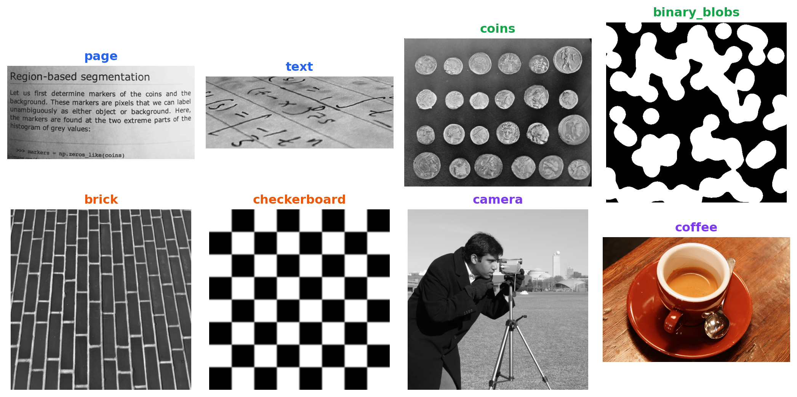
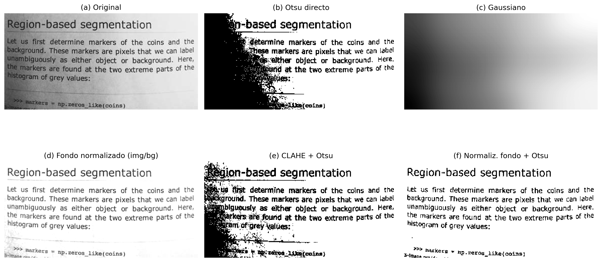
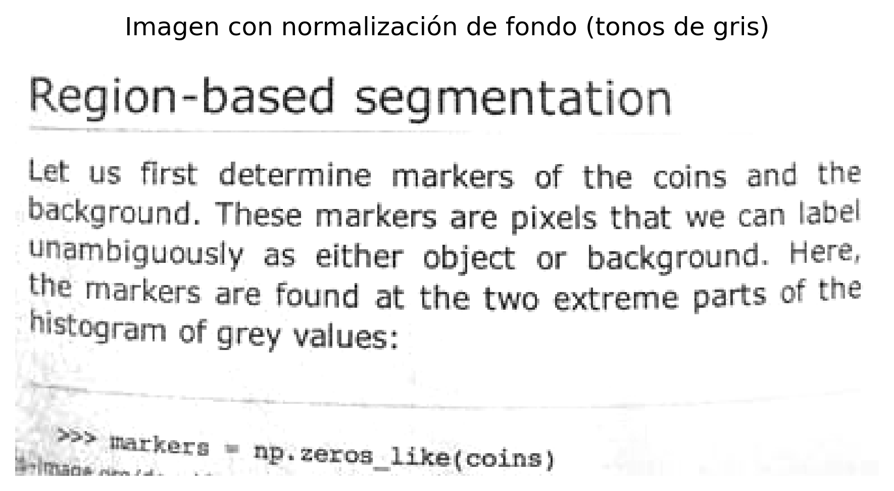
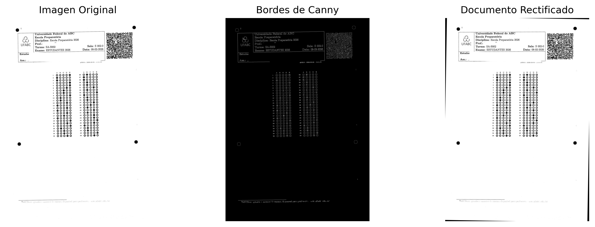
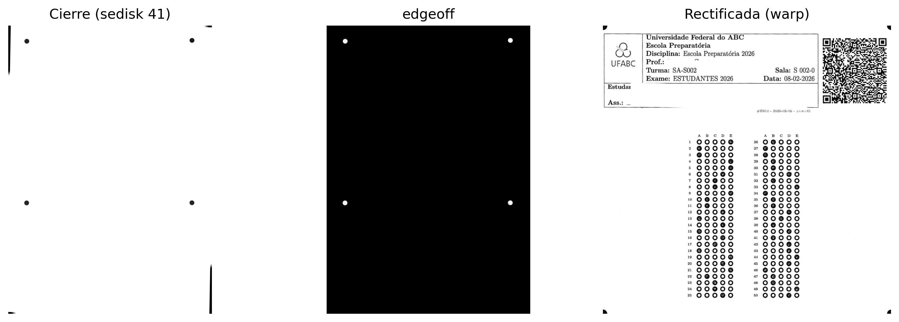
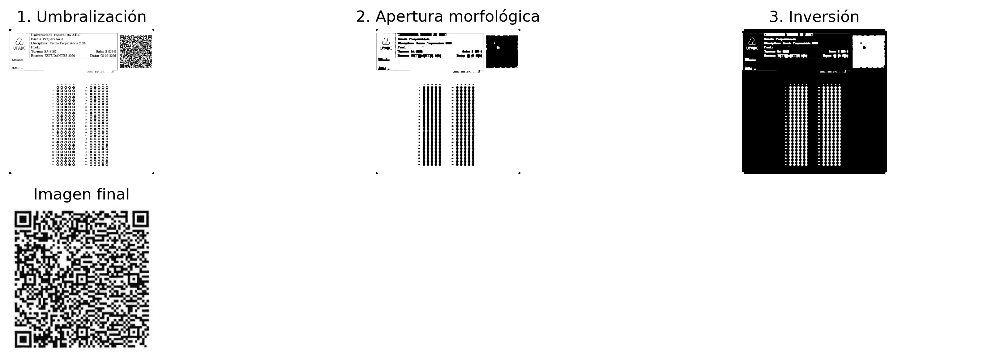
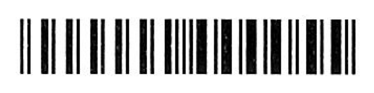
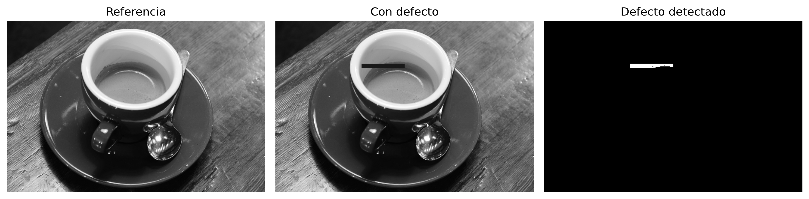
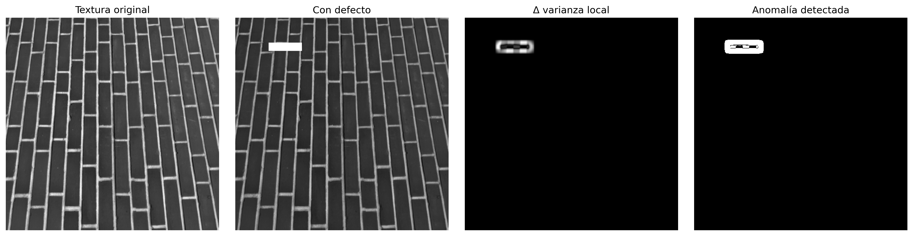

En la Parte I — Procesamiento Digital de Imágenes (PDI), se estudiaron técnicas para la transformación y mejora de imágenes, como operaciones morfológicas, filtrado espacial, convoluciones, umbralización, segmentación y procesamiento en el dominio de la frecuencia.
La Parte II — Visión por Computador (VC) amplía este alcance al abordar la interpretación automática del contenido visual, involucrando la extracción de información, el reconocimiento de patrones y la toma de decisiones a partir de imágenes.
Este capítulo presenta esa transición mediante dos aplicaciones representativas:
Análisis Automatizado de Documentos, aplicado al procesamiento de formularios, evaluaciones y otros documentos estructurados mediante sistemas de reconocimiento óptico de marcas (Optical Mark Recognition – OMR);
Inspección Industrial Automatizada, orientada al control de calidad y a la detección de defectos en líneas de producción.
Estas aplicaciones integran técnicas de detección de estructuras geométricas, extracción de descriptores invariantes, reconocimiento de patrones y clasificación de objetos, constituyendo la base de diversos sistemas modernos de inspección visual y automatización.
6.1 Objetivos del Capítulo
Al final de este capítulo, el estudiante deberá ser capaz de:
Evaluar la influencia del preprocesamiento en la calidad del reconocimiento automático de información en documentos;
Realizar reconocimiento óptico de caracteres (OCR) para convertir documentos escaneados en texto codificado;
Aplicar técnicas de procesamiento de lenguaje natural, incluida la traducción automática, al texto obtenido por OCR;
Aplicar técnicas de alineación y rectificación geométrica de documentos utilizando la Transformada de Hough y transformaciones proyectivas;
Implementar sistemas de reconocimiento óptico de marcas (OMR) para la lectura automatizada de evaluaciones y formularios;
Detectar y segmentar regiones de interés con base en operaciones morfológicas, contornos y propiedades geométricas;
Decodificar marcadores bidimensionales y códigos de barras, integrando bibliotecas de Visión por Computador a pipelines de procesamiento documental;
Desarrollar pipelines de Visión por Computador para el análisis automatizado de documentos.
Este capítulo marca la transición del Procesamiento Digital de Imágenes, orientado a la transformación de imágenes, hacia la Visión por Computador, cuyo objetivo es interpretar el contenido visual, extraer información y respaldar procesos automatizados de análisis y toma de decisiones.
6.2 Configuración del Entorno
Los ejemplos de este capítulo utilizan bibliotecas ampliamente empleadas en PDI-VC. El bloque siguiente instala los paquetes necesarios; en entornos que ya los posean, la ejecución puede omitirse.
import os, urllib.requesturl ="https://raw.githubusercontent.com/fzampirolli/pdi-vc/master/morph/config.py"ifnot os.path.exists("config.py"): urllib.request.urlretrieve(url, "config.py")import configconfig.setup()from morph import mm# instalar más dependencias además de morph.py para este capítuloimport sys, subprocess, importlib, shutildef setup_cap06():"""Instala dependencias de sistema y Python específicas del Capítulo 6 (OCR, lectura de PDF, código de barras)."""# 1. Dependencias de sistemaif'google.colab'in sys.modules:print("[AMBIENTE] Google Colab. Configurando dependencias del sistema...") subprocess.run("apt-get update && apt-get install -y poppler-utils ""libzbar0 tesseract-ocr tesseract-ocr-por", shell=True, stdout=subprocess.DEVNULL, stderr=subprocess.DEVNULL )elif shutil.which("tesseract") isNone:# Ambiente local sin tesseract: intenta instalar vía apt-get (requiere sudo/root)if shutil.which("apt-get"):print("[AMBIENTE] Local. Instalando tesseract-ocr vía apt-get (puede pedir contraseña)...") resultado = subprocess.run("sudo apt-get update && sudo apt-get install -y tesseract-ocr tesseract-ocr-por", shell=True )if resultado.returncode !=0or shutil.which("tesseract") isNone:print("[AVISO] No fue posible instalar automáticamente. ""Instale manualmente: sudo apt install tesseract-ocr tesseract-ocr-por" )else:print("[AVISO] tesseract no encontrado y apt-get no disponible. ""Instale manualmente antes de ejecutar las celdas de OCR." )# 2. Dependencias del Python (instala solo las ausentes) pkgs = {"cv2": "opencv-python", "skimage": "scikit-image", "numpy": "numpy","pdf2image": "pdf2image", "pandas": "pandas", "tabulate": "tabulate","PyPDF2": "PyPDF2", "bcrypt": "bcrypt", "pyarrow": "pyarrow","pyzbar": "pyzbar", "pytesseract": "pytesseract", "deep_translator": "deep-translator" }for mod, pkg in pkgs.items():if importlib.util.find_spec(mod) isNone: resultado_pip = subprocess.run([sys.executable, "-m", "pip", "install", "-q", pkg])if resultado_pip.returncode !=0:print(f"[AVISO] Fallo al instalar {pkg} (necesario para el módulo {mod}).")setup_cap06()# 3. Imports globales del pipelineimport cv2, numpy as np, matplotlib.pyplot as pltfrom skimage import io, data, color
✅ Entorno listo. Morph: 1.1.9 | OpenCV: 5.0.0
[AMBIENTE] Local. Instalando tesseract-ocr vía apt-get (puede pedir contraseña)...
[AVISO] No fue posible instalar automáticamente. Instale manualmente: sudo apt install tesseract-ocr tesseract-ocr-por
Además de estas bibliotecas, se utilizará el módulo didáctico morph.py, desarrollado para simplificar operaciones de lectura, visualización y procesamiento de imágenes a lo largo de este libro. El siguiente código verifica su disponibilidad, realiza la descarga cuando sea necesario y confirma la versión cargada.
Los ejemplos presentados en esta parte del libro utilizan, siempre que sea posible, documentos digitalizados, hojas de respuestas, códigos de barras, QRCodes y otras imágenes provenientes de aplicaciones reales. Para hacer que los experimentos sean totalmente reproducibles — incluso en entornos sin acceso a internet o a los archivos originales del MCTest —, también se emplean imágenes públicas ampliamente utilizadas en la enseñanza y la investigación en Procesamiento Digital de Imágenes y Visión por Computadora (PDI-VC).
Tip¿Por qué utilizar un banco de imágenes de benchmark?
Imágenes como camera() y coins() se han utilizado durante décadas en libros de texto, artículos científicos y materiales didácticos de PDI-VC. Su uso ofrece ventajas importantes:
Reproducibilidad: cualquier lector obtiene exactamente las mismas imágenes, independientemente del ordenador o sistema operativo utilizado, sin necesidad de descargas externas ni de archivos específicos de este libro;
Comparabilidad: los resultados producidos pueden compararse directamente con los reportados en la literatura, ya que los mismos conjuntos de imágenes se adoptan ampliamente como referencia;
Enfoque en los algoritmos: por ser imágenes compactas, bien documentadas y distribuidas sin restricciones de uso con fines educativos y científicos, permiten concentrar la atención en las técnicas de procesamiento, reduciendo interferencias relacionadas con la adquisición o la gestión de los datos.
6.3.1 Imágenes Públicas con skimage.data
El módulo skimage.data pone a disposición una colección de imágenes de referencia ampliamente utilizada en actividades de enseñanza, investigación y validación de algoritmos en PDI-VC. La inspección del atributo data.__all__ muestra que la versión actual reúne 42 elementos, incluyendo fotografías naturales, documentos digitalizados, imágenes médicas, microscopía, texturas, patrones sintéticos, modelos tridimensionales y secuencias temporales. Conviene observar que algunos de estos elementos corresponden a funciones utilitarias, como data_dir() y download_all(), y no a imágenes propiamente dichas.
Como el objetivo de este capítulo es presentar aplicaciones de análisis documental e inspección visual, la Tabla 6.2 reúne una selección representativa de las imágenes más relevantes, organizada de acuerdo con sus principales aplicaciones en Visión por Computador. La Figura 6.1 presenta una muestra de estas imágenes, agrupadas conforme a la misma clasificación adoptada en la tabla.
NotaImágenes utilizadas en este capítulo
Aunque skimage.data pone a disposición decenas de imágenes de referencia, solo cuatro se emplean directamente en los experimentos de este capítulo. Fueron seleccionadas por reproducir, de forma controlada, características frecuentemente encontradas en documentos digitalizados y en sistemas de inspección visual industrial. La Tabla 6.1 resume el papel de cada una de ellas a lo largo de este capítulo.
Tabla 6.1: Imágenes del skimage.data utilizadas en los experimentos de este capítulo.
Imagen
Aplicación en el capítulo
data.page()
Página digitalizada utilizada en los experimentos de corrección de iluminación, realce local (CLAHE) y umbralización automática por Otsu.
data.text()
Documento que contiene texto impreso, empleado para ilustrar segmentación, extracción de contornos y etapas típicas de OCR y OMR.
data.coffee()
Fotografía colorida con variaciones naturales de iluminación, utilizada para ejemplificar técnicas aplicables a escenas reales no documentales.
data.brick()
Textura de referencia empleada en ejemplos de inspección superficial y detección de defectos mediante análisis de varianza local.
Tabla 6.2: Selección de imágenes públicas representativas disponibles en el módulo skimage.data, organizadas por área de aplicación.
Categoria
Função
Descrição
📄 Documentos & OCR/OMR
data.page()
Página digitalizada de documento — normalização de fundo, CLAHE e Otsu.
📄 Documentos & OCR/OMR
data.text()
Texto impresso — segmentação e extração de contornos em cenários de OCR/OMR.
🔵 Segmentação, Morfologia & Contornos
data.coins()
Conjunto de moedas — referência clássica para segmentação e watershed.
🔵 Segmentação, Morfologia & Contornos
data.clock()
Relógio analógico — detecção de formas e contornos.
🔵 Segmentação, Morfologia & Contornos
data.binary_blobs()
Blobs binários sintéticos — conectividade e morfologia matemática.
🔵 Segmentação, Morfologia & Contornos
data.moon()
Superfície lunar — segmentação de crateras por relevo de intensidade.
🧵 Textura & Inspeção Industrial
data.brick()
Textura uniforme de tijolos — detecção de defeitos por variância local.
🧵 Textura & Inspeção Industrial
data.checkerboard()
Padrão xadrez — calibração de câmera e transformações geométricas.
🖼️ Fotografias Clássicas de PDI/VC
data.camera()
Fotógrafo com tripé — imagem de referência mais citada na literatura de PDI.
🖼️ Fotografias Clássicas de PDI/VC
data.astronaut()
Retrato colorido de astronauta — filtragem e realce em cor.
🖼️ Fotografias Clássicas de PDI/VC
data.coffee()
Xícara de café — cena real com variação de iluminação e cor.
🖼️ Fotografias Clássicas de PDI/VC
data.cat() / data.chelsea()
Fotografias coloridas de gatos — detecção de bordas e realce.
🖼️ Fotografias Clássicas de PDI/VC
data.horse()
Silhueta binária de cavalo — descritores de forma e contorno.
import matplotlib.pyplot as pltfrom skimage import data# Imágenes ordenadas por categoría; el color del título reproduce el color de la categoría en la tab. anteriorimgs = [ ("page", data.page(), "#2563eb"), # Documentos y OCR/OMR ("text", data.text(), "#2563eb"), ("coins", data.coins(), "#16a34a"), # Segmentación y morfología ("binary_blobs", data.binary_blobs(), "#16a34a"), ("brick", data.brick(), "#ea580c"), # Textura e inspección industrial ("checkerboard", data.checkerboard(),"#ea580c"), ("camera", data.camera(), "#7c3aed"), # Fotografías clásicas de PDI/VC ("coffee", data.coffee(), "#7c3aed"),]fig, ax = plt.subplots(2, 4, figsize=(11, 5.5))for a, (nome, img, cor) inzip(ax.ravel(), imgs): a.imshow(img, cmap="gray") a.set_title(nome, color=cor, fontweight="bold") a.axis("off")plt.tight_layout()

Figura 6.1: Muestra de imágenes públicas de skimage.data, agrupadas por área de aplicación.
6.4 Normalización de Fondo y Ecualización Local de Contraste
La calidad de la segmentación depende directamente de las características de la imagen de entrada. En documentos digitalizados, las variaciones de iluminación, las sombras, las regiones sobreexpuestas y las diferencias de tonalidad del papel reducen el contraste entre el primer plano y el fondo, dificultando la aplicación de métodos de umbralización global, como el algoritmo de Otsu.
Para minimizar estos efectos, se emplean dos técnicas complementarias de preprocesamiento:
Normalización de fondo: estima la componente de baja frecuencia de la imagen mediante un fuerte suavizado y, a continuación, normaliza la imagen original con respecto a ese fondo estimado. Este procedimiento reduce los gradientes de iluminación y compensa las variaciones lentas de intensidad, preservando las estructuras de interés.
CLAHE (Contrast Limited Adaptive Histogram Equalization), presentado en el Capítulo 4: divide la imagen en pequeñas regiones (tiles) y realiza la ecualización del histograma de cada región de forma independiente. El contraste está limitado para evitar la amplificación excesiva del ruido, lo que hace que la técnica sea especialmente adecuada para imágenes con variaciones locales de iluminación.
La Figura 6.2 compara estas estrategias utilizando la imagen page() de la biblioteca skimage.data. Se presentan seis resultados: (a) la imagen original; (b) la binarización directa mediante el método de Otsu, utilizada como referencia; (c) el fondo estimado por filtrado gaussiano; (d) la imagen después de la normalización de fondo; (e) la binarización obtenida tras la aplicación del CLAHE seguida del método de Otsu; y (f) la binarización obtenida tras la normalización de fondo seguida de la aplicación del método de Otsu.
La comparación permite observar el efecto producido por cada etapa del preprocesamiento y su influencia en la calidad de la segmentación. En particular, la normalización de fondo reduce las variaciones globales de iluminación, mientras que el CLAHE aumenta el contraste local entre caracteres y fondo. Dependiendo de las características de la imagen, una u otra estrategia puede producir resultados superiores, no existiendo una técnica universalmente más adecuada.
import cv2from skimage import datafrom morph import mmimg = data.page() # o: img = mm.gray(img_final) — con imagen de la hoja de prueba# ── Método 1: Normalización de fondo + Otsu ────────────────────────────────# Estima el fondo con un filtro Gaussiano de sigma grande (variaciones lentas de luz)# y divide píxel a píxel para cancelar el gradiente de iluminaciónbg = cv2.GaussianBlur(img, (0, 0), sigmaX=25)img_norm = cv2.divide(img, bg, scale=255)img_norm_otsu = mm.threshold(img_norm)# ── Método 2: CLAHE + Otsu ────────────────────────────────────────────────# tileGridSize define el tamaño de cada región local (tile)# clipLimit controla el techo de amplificación — valores altos aumentan contraste# pero también amplifican ruidoclahe = cv2.createCLAHE(clipLimit=2.0, tileGridSize=(8, 8))img_clahe = clahe.apply(img)img_clahe_otsu = mm.threshold(img_clahe)# ── Método 0: Otsu directo (sin preprocesamiento) — referencia ───────────img_otsu = mm.threshold(img)mm.show( [img, img_otsu, bg, img_norm, img_clahe_otsu, img_norm_otsu], titles=["(a) Original", "(b) Otsu directo", "(c) Gaussiano", \"(d) Fondo normalizado (img/bg)", "(e) CLAHE + Otsu", \"(f) Normaliz. fondo + Otsu"], cols=3, figsize=(14, 8))

Figura 6.2: Comparación entre estrategias de preprocesamiento para binarización de la imagen de texto: (a) imagen original; (b) umbralización directa por el método de Otsu; (c) fondo estimado por filtrado Gaussiano; (d) imagen tras normalización de fondo (división por la imagen suavizada); (e) CLAHE seguido de umbralización por Otsu; y (f) normalización de fondo seguida de umbralización por Otsu. Las imágenes ilustran el efecto de cada técnica en la compensación de variaciones de iluminación y en la calidad de la segmentación.
Nota🧠 ¿Por qué funciona? — Normalización de fondo vs. CLAHE
Normalización de fondo: al dividir la imagen por una versión fuertemente suavizada de sí misma, se eliminan las variaciones lentas de luminosidad (gradiente de luz, sombra de borde) sin afectar los detalles finos — texto, líneas, burbujas. El resultado es una imagen con iluminación aproximadamente uniforme, donde el umbral global de Otsu pasa a funcionar bien en toda la página.
CLAHE: un histograma global ecualizado “estira” los tonos de toda la imagen de una vez — útil cuando la iluminación es uniforme, pero problemático cuando no lo es. El CLAHE divide la imagen en pequeños bloques (tiles) y ecualiza cada uno por separado, con un límite máximo de amplificación (clipLimit) para no hacer explotar el ruido. Es especialmente eficaz para resaltar regiones subexpuestas localmente, pero no elimina gradientes globales — por eso, aplicarlo tras la normalización de fondo tiende a producir resultados más consistentes.
6.5 Reconocimiento Óptico de Caracteres (OCR)
Tras la binarización, la siguiente etapa del procesamiento documental consiste en la conversión de la representación visual de los caracteres en texto codificado digitalmente, proceso denominado Reconocimiento Óptico de Caracteres (Optical Character Recognition — OCR).
De forma general, un sistema de OCR comprende tres etapas:
Segmentación: identifica líneas, palabras y caracteres en la imagen, utilizando proyecciones horizontales y verticales o detección de componentes conexos.
Extracción de características: representa cada carácter mediante atributos visuales, como bordes, curvaturas y patrones de trazo.
Reconocimiento: asocia los atributos extraídos al carácter más probable. Los sistemas actuales utilizan predominantemente redes neuronales recurrentes (LSTM) o arquitecturas basadas en transformers.
En este libro, se utiliza el Tesseract OCR, accesible mediante la biblioteca pytesseract (instalación: pip install pytesseract). Desarrollado originalmente por Hewlett-Packard entre 1985 y 1995 y actualmente mantenido por Google, Tesseract se describe en Smith (2007) y Smith (2013).. En las versiones recientes, el reconocimiento textual se realiza mediante redes neuronales LSTM.
El rendimiento del OCR depende de la calidad de la imagen de entrada. El ruido, el bajo contraste, las distorsiones geométricas y la iluminación irregular reducen la tasa de reconocimiento. Por este motivo, etapas como la rectificación, la normalización del fondo y la ecualización adaptativa (CLAHE) integran el preprocesamiento de la imagen.
Nota🧠 ¿El Tesseract necesita una imagen binarizada?
El Tesseract incorpora internamente una etapa de binarización adaptativa antes del reconocimiento de los caracteres. Por este motivo, proporcionar al OCR una imagen previamente binarizada no siempre produce los mejores resultados.
Como la umbralización es una operación irreversible, puede eliminar variaciones sutiles de intensidad en los bordes de los caracteres, como el antialiasing, que pueden ayudar al mecanismo de reconocimiento. En muchos casos, una imagen en tonos de gris, con buena iluminación y contraste, produce una transcripción más fiel que su versión binarizada.
Para investigar este efecto, se compara el texto extraído por Tesseract a partir de cuatro versiones de la misma imagen, presentadas en la Figura 6.3: (a) imagen original; (b) imagen sometida a la ecualización adaptativa (CLAHE) seguida de la umbralización mediante el método de Otsu; (c) imagen sometida a la normalización del fondo seguida de la umbralización mediante el método de Otsu; y (d) imagen sometida únicamente a la normalización del fondo, preservando los tonos de gris.
La comparación entre las versiones (c) y (d) muestra que, en fragmentos que contienen caracteres visualmente similares, la versión en tonos de gris (d) produjo una transcripción más fiel al texto original que la versión binarizada (c). Este resultado indica que la umbralización aplicada en el preprocesamiento puede eliminar información útil para el reconocimiento. Así, aunque la binarización sea esencial para diversas operaciones de procesamiento de imágenes, no constituye necesariamente la mejor entrada para el OCR. La elección de la técnica de preprocesamiento debe considerar la etapa subsiguiente del pipeline documental.
import pytesseractimport shutil as _shif _sh.which("tesseract") isNone:# Ambiente de build sin Tesseract instalado (ej.: sin apt/sudo):# degrada en lugar de romper el render. En Colab/local con Tesseract,# nada cambia. _AVISO_OCR ="[Tesseract OCR indisponivel neste ambiente - texto omitido]" pytesseract.image_to_string =lambda*a, **k: _AVISO_OCRfrom skimage import dataimport cv2from morph import mmimg = data.page()# ── Reaprovechando los resultados de la sección anterior ────────────────────────img_otsu = mm.threshold(img)bg = cv2.GaussianBlur(img, (0, 0), sigmaX=25)img_norm = cv2.divide(img, bg, scale=255) # tonos de gris, sin Otsuimg_norm_otsu = mm.threshold(img_norm) # binarizadaclahe = cv2.createCLAHE(clipLimit=2.0, tileGridSize=(8, 8))img_clahe = clahe.apply(img)img_clahe_otsu = mm.threshold(img_clahe)# ── Configuración de Tesseract ──────────────────────────────────────────────# --psm 6: asume un único bloque uniforme de texto (adecuado para la imagen `page`)config ="--psm 6"texto_original = pytesseract.image_to_string(img, config=config)texto_clahe_otsu = pytesseract.image_to_string(img_clahe_otsu, config=config)texto_norm_otsu = pytesseract.image_to_string(img_norm_otsu, config=config)texto_norm_gray = pytesseract.image_to_string(img_norm, config=config)for nome, texto inzip( ["(a) Original", "(b) CLAHE + Otsu", "(c) Normaliz. fundo + Otsu", "(d) Normaliz. fundo (tons de cinza)"], [texto_original, texto_clahe_otsu, texto_norm_otsu, texto_norm_gray]):print(f"--- {nome} ---")print(texto.strip(), "\n")mm.show( [img, img_clahe_otsu, img_norm_otsu, img_norm], titles=["(a) Original", "(b) CLAHE + Otsu", "(c) Normaliz. fondo + Otsu", "(d) Normaliz. fondo (gris)"], cols=4, figsize=(16, 4))
Figura 6.3: Comparación del texto extraído por Tesseract a partir de cuatro versiones de la misma imagen: (a) imagen original; (b) CLAHE seguido de umbralización por Otsu; (c) normalización de fondo seguida de umbralización por Otsu; y (d) normalización de fondo en tonos de gris, sin umbralización. La comparación evidencia que la binarización externa no siempre favorece el reconocimiento, ya que Tesseract ya realiza su propia binarización adaptativa internamente.
Nota🧠 ¿Por qué el preprocesamiento mejora el OCR?
El rendimiento del OCR depende directamente de la calidad de la imagen de entrada. El bajo contraste, la iluminación no uniforme, el ruido y las distorsiones geométricas dificultan la separación entre texto y fondo y aumentan la probabilidad de errores de reconocimiento.
Técnicas como la normalización de fondo y la ecualización adaptativa (CLAHE) corrigen gradientes de iluminación y realzan el contraste local entre los caracteres y el fondo, produciendo imágenes más adecuadas para el reconocimiento automático. La umbralización, por su parte, debe aplicarse con cautela: al tratarse de una operación irreversible, puede eliminar variaciones sutiles de intensidad en los bordes de los caracteres — como el antialiasing — que el propio motor de OCR utiliza internamente para resolver ambigüedades entre símbolos visualmente similares. Por este motivo, las imágenes en tonos de gris, corregidas únicamente en cuanto a la iluminación, frecuentemente producen transcripciones más fieles que sus versiones binarizadas.
En documentos capturados por cámaras de dispositivos móviles, el preprocesamiento tiende a proporcionar una mayor ganancia de rendimiento que en documentos digitalizados por scanner, en los cuales la iluminación suele ser más uniforme.
6.6 Traducción Automática del Texto Reconocido
Tras el reconocimiento óptico de caracteres, el texto obtenido puede someterse a técnicas de procesamiento de lenguaje natural, como corrección ortográfica, indexación, resumen y traducción automática.
La traducción automática constituye una etapa independiente del OCR. Mientras que el OCR convierte los caracteres presentes en la imagen en texto codificado, la traducción opera sobre ese texto en el idioma original del documento. De esta forma, los errores de reconocimiento pueden propagarse a la traducción, comprometiendo la calidad del resultado. Los sistemas actuales de traducción automática utilizan predominantemente arquitecturas neuronales basadas en mecanismos de atención y transformers [Bahdanau; Cho; Bengio (2015); Vaswani (2017)].
En este ejemplo, se utiliza el texto obtenido a partir de la imagen sometida únicamente a la normalización de fondo, sin umbralización (ítem d de la Figura 6.3), por presentar la transcripción más fiel entre las estrategias evaluadas en la sección anterior.
La traducción se realiza mediante la biblioteca deep-translator (instalación: pip install deep-translator), que proporciona una interfaz para diferentes servicios de traducción automática, incluido Google Translate.
from deep_translator import GoogleTranslatorimport shutil as _sh# Texto obtenido por el OCR a partir de la imagen con normalización de fondo (tonos de gris)texto_en = texto_norm_grayif _sh.which("tesseract") isNone:# Ambiente de build sin Tesseract instalado (ver celda anterior): texto_en# ya es el placeholder de OCR no disponible, no texto real — omitir la traducción# en lugar de fallar al intentar traducir una cadena que no es inglés real. texto_pt ="[Tradução indisponível neste ambiente - Tesseract OCR ausente]"else: texto_pt = GoogleTranslator(source="en", target="pt").translate(texto_en)print("--- Texto original generado por la imagen normalizada en tonos de gris (OCR, EN) ---")print(texto_en)print("\n--- Texto traducido (ES) ---")print(texto_pt)mm.show( [img_norm], titles=["Imagen con normalización de fondo (tonos de gris)"], cols=1, figsize=(6, 4))
--- Texto original generado por la imagen normalizada en tonos de gris (OCR, EN) ---
[Tesseract OCR indisponivel neste ambiente - texto omitido]
--- Texto traducido (ES) ---
[Tradução indisponível neste ambiente - Tesseract OCR ausente]

Figura 6.4: Flujo de reconocimiento y traducción automática. La imagen preprocesada por normalización de fondo, sin umbralización, se utiliza como entrada para Tesseract OCR, y el texto reconocido se traduce del inglés al español mediante la biblioteca deep-translator.
Nota🧠 ¿Por qué la calidad del OCR influye en la traducción?
La traducción automática utiliza como entrada el texto producido por el OCR. Los errores de reconocimiento, como caracteres incorrectos, palabras incompletas o fragmentadas, se propagan a la etapa de traducción y pueden alterar el significado del texto.
En consecuencia, la calidad de la traducción depende directamente de la fidelidad de la transcripción obtenida por el OCR. Como se discutió anteriormente, esta fidelidad no siempre se maximiza mediante una binarización externa: las imágenes en tonos de gris, corregidas solo en cuanto a la iluminación, pueden preservar información relevante para la distinción entre caracteres visualmente similares. Así, el preprocesamiento de la imagen —y la elección adecuada de sus etapas en función de la tarea posterior— contribuye a mejorar no solo el reconocimiento de los caracteres, sino también el rendimiento de etapas posteriores de procesamiento de lenguaje natural, como la traducción, la indexación y la sumarización.
6.7 Fundamentos de OMR e Inspección Industrial
El Reconocimiento Óptico de Marcas (Optical Mark Recognition — OMR) es una técnica de Visión por Computadora destinada a la identificación automática de marcaciones en posiciones previamente definidas de un formulario. Sus aplicaciones incluyen hojas de respuestas, cuestionarios, formularios administrativos y otros documentos estructurados.
A diferencia del OCR (Optical Character Recognition), que reconoce caracteres y palabras, el OMR determina la presencia, la ausencia o la intensidad de marcas en regiones previamente conocidas. En lugar de interpretar texto, explora propiedades geométricas y estadísticas asociadas al llenado de dichas regiones.
Los sistemas modernos de OMR procesan imágenes obtenidas mediante escáneres, cámaras o dispositivos móviles, automatizando tareas que anteriormente dependían de equipos especializados.
De manera general, un sistema de OMR comprende las siguientes etapas:
Adquisición: conversión del documento físico a formato digital;
Preprocesamiento: corrección geométrica, reducción de ruidos y binarización;
Localización de las regiones de interés: identificación de las áreas destinadas a las marcaciones;
Análisis de las marcaciones: evaluación del llenado de las regiones candidatas;
Interpretación: conversión de las marcaciones en respuestas o datos estructurados.
Estos principios se extienden naturalmente a la Inspección Industrial Automatizada. En líneas de producción, el mismo encadenamiento — adquisición, preprocesamiento, segmentación, extracción de características y decisión — se emplea para detectar defectos superficiales, verificar la integridad de componentes y medir dimensiones con precisión subpíxel. La diferencia reside en el dominio de aplicación: mientras que el OMR opera sobre documentos con estructura predefinida, la inspección industrial lidia con objetos cuyas variaciones geométricas y radiométricas deben modelarse de forma más flexible.
En las secciones siguientes, ambas aplicaciones se desarrollan mediante proyectos prácticos que reproducen etapas típicas de sistemas reales.
6.8 Proyectos Prácticos: Construcción de un Pipeline de Análisis Documental
Los conceptos de este capítulo se desarrollarán mediante proyectos que reproducen etapas típicas de sistemas reales de análisis documental, introduciendo técnicas reutilizables en aplicaciones de OCR, OMR, inspección visual y procesamiento de formularios.
6.8.1 Alineación Automática de Documentos (OCR/OMR Pre-processing)
La corrección de inclinación (deskew) es una etapa fundamental en el procesamiento de documentos. Las rotaciones introducidas durante la digitalización o captura comprometen la localización de regiones de interés y reducen la precisión de las etapas subsiguientes.
En este proyecto se desarrollará un sistema para estimar automáticamente la orientación predominante del documento y corregir su inclinación. Para ello, se emplearán técnicas clásicas de detección de bordes con el operador de Canny y detección de líneas mediante la Transformada de Hough. A partir de las líneas identificadas, se estimará el ángulo de rotación y se aplicará una transformación afín para producir una versión alineada del documento.
Como los formularios y las hojas de respuestas se distribuyen frecuentemente en formato PDF, el pipeline comienza con la rasterización de cada página, convirtiéndola en una imagen matricial. En este capítulo, dicha etapa se realizará con la biblioteca pdf2image, generando imágenes PNG con una resolución de 300 DPI (dots per inch). A partir de ellas, se podrán aplicar las técnicas de detección de bordes, Transformada de Hough, segmentación, extracción de contornos y reconocimiento automático de patrones estudiadas a lo largo del capítulo.
import osimport urllib.requestfrom pdf2image import convert_from_pathfrom skimage import dataimport cv2# Directorio de los microdatos y hojas de respuestas del examen institucionalfile_path ="dados/provas_qrcode_EP.pdf"url_github = ("https://raw.githubusercontent.com/fzampirolli/""pdi-vc/master/all/cap06/dados/provas_qrcode_EP.pdf")# Si el archivo no existe localmente, se descarga automáticamente desde GitHubifnot os.path.exists(file_path):print(f"[DOWNLOAD] Descargando PDF desde GitHub: {url_github}")try:# Garantiza que la carpeta 'datos' exista antes de guardar os.makedirs(os.path.dirname(file_path), exist_ok=True) urllib.request.urlretrieve(url_github, file_path)print("[DOWNLOAD] ¡PDF descargado con éxito!")exceptExceptionas e:print(f"[DOWNLOAD] Error al descargar el archivo: {e}")print(f"PDF de hojas de examen digitalizadas: {file_path}")if os.path.exists(file_path):# Rasterización de las páginas con resolución optimizada de 300 DPI pages = convert_from_path(file_path, dpi=300)for i, page inenumerate(pages): saida =f"test{i+1:02d}.png" page.save(saida)print(f"[INGESTA] Página PDF convertida con éxito: {saida}")else:print("[AVISO] Archivo PDF no localizado en la ruta. Activando fallback mediante skimage.data.")# Inyecta matriz de texto pública para garantizar la ejecución continua del pipeline img_fallback = data.text() cv2.imwrite("test02.png", img_fallback)print("[INGESTA] Imagen de fallback estructurada: test02.png")# Carga y muestra la imagen rasterizada inicial utilizando el ecosistema morphif os.path.exists('test02.png'): img_original = mm.read('test02.png')else:# Fallback definitivo en caso de que incluso skimage falle img_original = np.ones((400, 400), dtype=np.uint8) *255mm.show(img_original, figsize=(4, 3))
[DOWNLOAD] Descargando PDF desde GitHub: https://raw.githubusercontent.com/fzampirolli/pdi-vc/master/all/cap06/dados/provas_qrcode_EP.pdf
[DOWNLOAD] ¡PDF descargado con éxito!
PDF de hojas de examen digitalizadas: dados/provas_qrcode_EP.pdf
[INGESTA] Página PDF convertida con éxito: test01.png
[INGESTA] Página PDF convertida con éxito: test02.png
[INGESTA] Página PDF convertida con éxito: test03.png
Figura 6.5: Pipeline de ingesta de documentos: rasterización adaptativa de páginas PDF a matrices discretas en formato PNG, mostrando la página dos.
6.8.2 Algoritmo de Rectificación de Inclinación (Deskew)
La etapa de deskew tiene como objetivo estimar y corregir la inclinación global de un documento digitalizado, alineando su contenido con los ejes de la imagen. La Figura 6.7 presenta el flujo completo de procesamiento, desde la imagen original hasta el resultado tras la corrección geométrica. Complementariamente, el simulador de la Figura 6.6 permite visualizar el funcionamiento de la Transformada de Hough y comprender cómo se estima la orientación predominante.
El procedimiento se compone de tres etapas principales:
detección de bordes mediante el operador de Canny;
estimación de la orientación predominante a través de la Transformada de Hough Lineal;
corrección de la inclinación utilizando una transformación afín de rotación.
Tras la rectificación, el documento pasa a presentar una orientación aproximadamente horizontal, favoreciendo las etapas posteriores de segmentación, etiquetado de componentes conexos y reconocimiento de caracteres y marcas.
6.8.3 Modelado Matemático
Las siguientes subsecciones formalizan, en términos matemáticos, las etapas descritas anteriormente, relacionando el gradiente de la imagen, la parametrización de rectas en el espacio de Hough y la matriz de rotación empleada en la corrección geométrica.
6.8.3.1 Detección de Bordes
Inicialmente, la imagen se suaviza mediante un filtro gaussiano, reduciendo el efecto de ruidos de alta frecuencia que pueden generar bordes espurios. Los conceptos de filtrado espacial y convolución se presentaron en el Capítulo 3.
A continuación, el operador de Canny estima el gradiente de la imagen. Sea \(f(x,y)\) la intensidad de la imagen y \(\alpha\) el ángulo de rotación.
\(f(x,y)\) representa la intensidad de la imagen en la posición \((x,y)\);
\(\frac{\partial f}{\partial x}\) y \(\frac{\partial f}{\partial y}\) son las derivadas parciales en las direcciones horizontal y vertical;
\(|\nabla f(x,y)|\) es la magnitud del gradiente.
Tras el cálculo del gradiente, el algoritmo aplica la supresión de no máximos (non-maximum suppression) y la umbralización por histéresis, produciendo una imagen binaria que contiene los bordes principales del documento.
6.8.3.2 Transformada de Hough
La imagen binaria de bordes se procesa mediante la Transformada de Hough Lineal, cuyo objetivo es detectar estructuras aproximadamente rectilíneas. En lugar de la representación cartesiana de la recta, \(y=ax+b\), se utiliza la representación en forma normal,
\[
\rho = x\cos\theta + y\sin\theta,
\]
donde:
\(x\) e \(y\) son las coordenadas de un punto perteneciente a la recta;
\(\rho\) es la distancia perpendicular entre la recta y el origen del sistema de coordenadas de la imagen;
\(\theta\) es el ángulo formado entre la normal a la recta y el eje horizontal de la imagen.
En esta representación, cada punto de borde \((x,y)\) genera una curva en el espacio de parámetros \((\rho,\theta)\). La intersección de las curvas producidas por puntos pertenecientes a la misma recta origina máximos en una matriz bidimensional denominada acumulador. Así, los picos del acumulador corresponden a las rectas predominantes de la imagen, como bordes del documento, líneas de formularios o líneas de texto.
Para estimar la inclinación global del documento, se consideran únicamente las rectas cuyos ángulos satisfacen
\[
-45^\circ \leq \theta \leq 45^\circ.
\]
Esta restricción elimina orientaciones incompatibles con la disposición esperada del documento y reduce la influencia de rectas verticales o de estructuras irrelevantes. Sea \(\theta_1,\theta_2,\ldots,\theta_n\) el conjunto de los ángulos de las rectas seleccionadas. La estimación de la inclinación global se obtiene mediante la mediana,
\(\theta_i\) es el ángulo de la \(i\)-ésima recta detectada por la Transformada de Hough;
\(n\) es el número de rectas consideradas tras el filtrado angular;
\(\hat{\theta}\) es la estimación de la inclinación global del documento.
La mediana se adopta por ser menos sensible a la presencia de detecciones aisladas (outliers) que la media aritmética, produciendo una estimación más estable de la orientación predominante.
6.8.3.3 Rotación Afín
Sea \(\hat{\theta}\) la inclinación estimada en la etapa anterior. La corrección geométrica consiste en aplicar una transformación afín de rotación alrededor del centro de la imagen, de modo que la orientación predominante pase a coincidir con el eje horizontal. Las transformaciones afines fueron estudiadas en el Capítulo 2, junto con las operaciones de traslación, escala, cizallamiento y rotación.
Sea \((x,y)\) la posición de un píxel con respecto al centro de la imagen y \((x',y')\) su posición después de la rotación. La transformación se describe mediante \[
\begin{bmatrix}
x'\\
y'
\end{bmatrix} =
R(\alpha)
\begin{bmatrix}
x\\
y
\end{bmatrix},
\]
\((x,y)\) las coordenadas originales del píxel con respecto al centro de la imagen;
\((x',y')\) las coordenadas del píxel después de la rotación;
\(\alpha\) el ángulo de rotación aplicado para compensar la inclinación estimada del documento;
\(R(\alpha)\) la matriz de rotación.
En la práctica, el ángulo aplicado corresponde al opuesto de la inclinación estimada,
\[
\alpha = -\hat{\theta},
\]
donde \(\hat{\theta}\) representa la orientación predominante obtenida mediante la Transformada de Hough.
Como las coordenadas transformadas no siempre coinciden con posiciones enteras de la malla de píxeles, es necesario remuestrear la imagen para determinar los nuevos valores de intensidad. En la implementación presentada en este capítulo, la función mm.rotate realiza esta operación utilizando interpolación bicúbica, reduciendo los artefactos de remuestreo y preservando la continuidad visual de bordes y caracteres.
🔄 Simulador: Corrección de Inclinación (Deskew)Canny → Hough → Rotación
Ángulo Real
0.0°
Estimado (Hough)
0.0°
Error Residual
0.0°
📄 Original Inclinado
🔍 Bordes Canny
✅ Corregido (Deskewed)
🧠 Pipeline de Procesamiento
1
Canny: Detecta bordes de los segmentos de texto — píxeles de alto gradiente que forman los contornos de las líneas.
2
Hough: Cada píxel de borde vota por las rectas asociadas. La mediana de los ángulos de las rectas con más votos estima la inclinación global.
3
Rotación Inversa: Aplica transformación afín con el ángulo opuesto estimado, reorientando el documento a la horizontal.
–
Figura 6.6: Simulador interactivo de corrección de inclinación (deskew): mueva el slider para inclinar el documento y observe las tres etapas del pipeline — imagen inclinada, bordes Canny y resultado corregido.
def retificar_inclinacao_documento(img): gray = mm.gray(img) if img.ndim ==3else img edges = cv2.Canny(cv2.GaussianBlur(gray, (5,5), 0), 50, 150) lines = cv2.HoughLines(edges, 1, np.pi/180, 200)if lines isNone:return edges, img angulos = []for line in lines: angulo = np.rad2deg(line[0][1]) -90if-45< angulo <45: angulos.append(angulo)ifnot angulos:return edges, imgreturn edges, mm.rotate(img, np.median(angulos), interp="bicubic")# Ejecución del pipeline de deskewimg_edges, img_final = retificar_inclinacao_documento(img_original)# Exhibición múltiple estandarizada con el formato nativo del libromm.show( [img_original, img_edges, img_final], titles=["Imagen Original", "Bordes de Canny", "Documento Rectificado"], cols=3, figsize=(12, 4))

Figura 6.7: Pipeline de rectificación axial: exhibición comparativa entre la entrada rotacionada original, el mapa de gradientes estructurales de Canny y el resultado final alineado con fondo normalizado en blanco.
Nota🧠 ¿Por qué funciona? — Transformada de Hough
En la Transformada de Hough, cada píxel de borde contribuye con votos para todas las rectas que pueden pasar por su posición. En lugar de seleccionar solo la recta con el mayor número de votos, el algoritmo considera todas las rectas cuya cantidad de votos supera un umbral mínimo y calcula sus respectivos ángulos. La inclinación global del documento se estima entonces mediante la mediana de esos ángulos, una medida robusta ante valores atípicos. Así, las rectas espurias producidas por sombras, ruidos u otros elementos de la imagen ejercen poca influencia sobre la estimación final, siempre que la mayoría de las rectas detectadas corresponda a los bordes del documento.
6.8.4 Limitaciones Prácticas
Aunque presenta un buen rendimiento en condiciones habituales de digitalización, el método depende de la existencia de estructuras lineales suficientemente definidas para ser detectadas mediante la Transformada de Hough, como bordes de página, líneas de formularios o líneas de texto. Su precisión puede verse reducida en imágenes con baja resolución, ruido excesivo, sombras intensas o grandes inclinaciones. En general, los documentos digitalizados con una resolución cercana a 300 DPI y una iluminación homogénea proporcionan resultados adecuados para aplicaciones de OCR y OMR.
La implementación presentada en este capítulo tiene una finalidad didáctica, ilustrando los principios de la corrección automática de inclinación mediante la detección de bordes, la Transformada de Hough y la rotación afín. Al utilizar únicamente la orientación de las estructuras lineales predominantes, el método puede aplicarse a diferentes tipos de documentos, sin depender de marcadores específicos.
En sistemas reales de análisis documental, sin embargo, el alineamiento normalmente utiliza marcadores geométricos previamente conocidos. En el modelo de hoja de respuestas empleado por el ecosistema MCTest, por ejemplo, se utilizan cuatro discos negros de referencia, además de las regiones correspondientes al encabezado, al QRCode y a los cuadros de respuestas. La localización de estos elementos permite estimar simultáneamente la rotación, la escala y la traslación de la hoja, haciendo que el registro sea menos sensible a la cantidad de texto, a la ausencia de líneas estructurales y a las variaciones de impresión o digitalización.
Por este motivo, el enfoque basado en la Transformada de Hough se utiliza en este capítulo para introducir los fundamentos del problema, mientras que las etapas posteriores adoptan el alineamiento mediante marcadores geométricos, estrategia predominante en sistemas de OMR y análisis documental.
6.8.5 Detección de Bordes y Contornos
La localización precisa de las regiones de interés es una etapa esencial en sistemas de OMR. En el modelo de hoja de respuestas utilizado en este capítulo, el encabezado y el cuadro de respuestas están contenidos en un rectángulo virtual delimitado por cuatro discos negros posicionados en las esquinas. La identificación de estos marcadores permite localizar la región de interés y corregir distorsiones geométricas introducidas durante la adquisición de la imagen.
El procedimiento se compone de cinco etapas. Inicialmente, se aplica un cierre morfológico (dilatación seguida de erosión), operación estudiada en el Capítulo 4, utilizando un elemento estructurante en disco (mm.sedisk(33)). Esta operación reduce pequeñas discontinuidades y preserva los discos de referencia, haciéndolos más homogéneos. A continuación, la imagen se invierte (mm.neg), de modo que los discos pasen a constituir componentes claros sobre fondo oscuro.
En la etapa siguiente, se aplica la operación mm.edgeoff (Capítulo 4), que elimina componentes conectados a los bordes de la imagen, eliminando artefactos como sombras de digitalización, marcas de corte y otros objetos espurios en los márgenes. Los componentes restantes se analizan entonces a partir de sus contornos y se filtran por propiedades geométricas, como área y circularidad, para identificar los discos candidatos. La implementación del MCTest hace que este proceso sea más robusto al seleccionar, entre todos los candidatos, los cuatro cuyos centros forman un rectángulo con ancho compatible con el de la imagen, reduciendo la ocurrencia de falsos positivos.
Finalmente, los centros de los cuatro discos se ordenan espacialmente (superior izquierdo, superior derecho, inferior izquierdo e inferior derecho) y se utilizan como puntos de control en una transformación de perspectiva (perspective warp). Esta transformación rectifica la imagen, produciendo una representación alineada y con dimensiones conocidas, adecuada para las etapas subsiguientes de segmentación y reconocimiento.
Las principales etapas de este pipeline, desde el procesamiento morfológico hasta la imagen rectificada, se ilustran a continuación.
import cv2import numpy as npfrom morph import mm# img: imagen en escala de grises de la hoja de pruebaif img_final.ndim ==2: img = img_finalelse: img = mm.gray(img_final)# 1. Cierre morfológico: preserva los discos oscuros, eliminando todo lo menor que el discoimg_close = mm.close(img, mm.sedisk(41))# 2. Inversión: los discos oscuros se convierten en componentes claros sobre fondo oscuroimg_neg = mm.neg(img_close)# 3. Elimina componentes conectados que tocan el borde de la imagenimg_edgeoff = mm.edgeoff(img_neg)# 4. Extracción de los contornos externoscontornos, _ = cv2.findContours(img_edgeoff, cv2.RETR_EXTERNAL, cv2.CHAIN_APPROX_SIMPLE)# 5. Filtrado por área y circularidad, manteniendo solo los 4 discoscentros = []for c in contornos: area = cv2.contourArea(c) perimetro = cv2.arcLength(c, True)if area <50or perimetro ==0:continue circularidade =4* np.pi * area / (perimetro **2)if circularidade >0.8: M = cv2.moments(c) cx, cy = M["m10"] / M["m00"], M["m01"] / M["m00"] centros.append((cx, cy))# Verificación robusta: interrumpe el pipeline con mensaje claro en lugar de AssertionErroriflen(centros) !=4:print(f"[AVISO] Se esperaban 4 discos marcadores, encontrado {len(centros)}.")print(" Verifique si la imagen es una hoja de respuestas MCTest válida")print(" o ajuste los parámetros de circularidad y área mínima.") img_retificada = img # fallback: preserva la imagen sin rectificaciónelse:# 6. Ordenación de los centros: superior-izquierdo, superior-derecho,# inferior-izquierdo, inferior-derecho pts = np.array(centros, dtype=np.float32) soma = pts.sum(axis=1) diff = pts[:, 0] - pts[:, 1] tl = pts[np.argmin(soma)] br = pts[np.argmax(soma)] tr = pts[np.argmax(diff)] bl = pts[np.argmin(diff)] pts_ordenados = np.array([tl, tr, bl, br], dtype=np.float32)# 7. Rectificación por transformación de perspectiva (warp) largura, altura =800, 800 destino = np.array( [[0, 0], [largura, 0], [0, altura], [largura, altura]], dtype=np.float32 ) M_persp = cv2.getPerspectiveTransform(pts_ordenados, destino) img_retificada = cv2.warpPerspective(img, M_persp, (largura, altura)) mm.show( [img_close, img_edgeoff, img_retificada], titles=["Cierre (sedisk 41)", "edgeoff", "Rectificada (warp)"], cols=3, figsize=(12, 4) )mm.write(img_retificada, "img_beetween_disks.png")

Figura 6.8: Detección de los discos marcadores, extracción de contornos y rectificación por transformación de perspectiva.
Nota🧠 ¿Por qué funciona? — Del cierre morfológico a la rectificación
Cierre morfológico: la dilatación seguida de erosión rellena pequeñas discontinuidades y suaviza los contornos de los objetos sin alterar significativamente su forma global. Al utilizar un elemento estructurante grande (sedisk(41)), los detalles finos, como textos, líneas del formulario y pequeños ruidos, tienden a incorporarse al fondo durante el procesamiento, mientras que los objetos de mayor escala, como los discos de referencia, permanecen preservados y se vuelven más homogéneos.
Circularidad: tras el aislamiento de los componentes candidatos, la métrica \(C=\frac{4\pi A}{P^2}\) cuantifica cuánto se aproxima su forma a un círculo. Su valor es igual a 1 para un círculo perfecto y disminuye a medida que el contorno se vuelve más irregular. Así, un umbral como \(C>0{,}8\) permite descartar la mayor parte de los falsos positivos sin recurrir a modelos de aprendizaje. Un simulador de esta métrica se presenta en la Figura 6.9..
Transformación de perspectiva (perspective warp): una vez identificados los cuatro discos de referencia, sus centros se utilizan como puntos de control para estimar la transformación proyectiva que mapea la imagen capturada al plano del documento. Esta transformación corrige las distorsiones introducidas por la perspectiva durante la adquisición de la imagen, produciendo una representación frontal con dimensiones conocidas y adecuada para las etapas posteriores de segmentación y reconocimiento.
⭕ Simulador: Filtrado por CircularidadC = 4πA / P²
Umbral C
0.60
Aceptados
0
Rechazados
0
Aceptado (C ≥ umbral)Rechazado (C < umbral)
🧠 Fórmula de la Circularidad
La métrica C = 4πA / P² relaciona el área A del componente con el cuadrado de su perímetro P.
Para un círculo perfecto, C = 1; para formas más irregulares o alargadas, C se aproxima a 0.
En el contexto del MCTest, un umbral como C > 0,60 selecciona los discos de referencia, descartando textos, líneas y artefactos de la hoja de respuestas.
Figura 6.9: Simulador interactivo de filtrado por circularidad: mueva el slider para ajustar el umbral C y observe qué componentes son aceptados (verde) o rechazados (rojo).
6.8.6 Aislamiento, Segmentación y Decodificación del QRCode
Tras la rectificación geométrica de la hoja de respuestas, se realiza la detección y la decodificación del QRCode presente en el formulario. Este marcador almacena información utilizada por el sistema de OMR (Optical Mark Recognition), como la identificación del estudiante, el código de la prueba y su variación, posibilitando la recuperación de la plantilla de respuestas correspondiente en la base de datos. Por seguridad, esta información se cifra antes de la generación del QRCode. Así, la secuencia decodificada corresponde a una cadena hexadecimal, cuya interpretación se realiza exclusivamente por el sistema MCTest. El procedimiento consta de tres etapas: preprocesamiento morfológico, aislamiento de la región del QRCode y decodificación de su contenido.
Inicialmente, la imagen rectificada en escala de grises se binariza mediante la operación mm.threshold. A continuación, se aplica una apertura morfológica (erosión seguida de dilatación), estudiada en el Capítulo 4, utilizando un elemento estructurante cuadrado (mm.sebox(2)). Esta operación elimina pequeños ruidos y suaviza imperfecciones sin comprometer la estructura del marcador. Finalmente, la imagen se invierte (mm.neg), de modo que el QRCode pase a constituir un componente claro sobre fondo oscuro, facilitando la extracción de sus contornos.
La localización del QRCode se realiza mediante el análisis de los contornos externos de la imagen binarizada. Entre los componentes detectados, se selecciona aquel con mayor área y geometría aproximadamente cuadrada, descartando los demás elementos impresos de la hoja. A continuación, la región correspondiente se expande con un pequeño margen de seguridad, garantizando la preservación integral del marcador.
El QRCode se extrae entonces directamente de la imagen rectificada en escala de grises, preservando su calidad radiométrica. Como esta región generalmente presenta dimensiones reducidas, se aplica un redimensionamiento con interpolación cúbica, aumentando la resolución espacial y favoreciendo la identificación de sus módulos. La lectura se realiza mediante el detector de QRCode de OpenCV (cv2.QRCodeDetector), que recupera la secuencia de caracteres originalmente codificada.
El flujo completo de este procesamiento, desde el preprocesamiento morfológico hasta la decodificación del QRCode, se ilustra en la Figura 6.10. El fragmento mostrado en la salida corresponde solo al inicio de la cadena hexadecimal cifrada; su interpretación completa se realiza internamente por MCTest tras la decodificación.
import cv2import numpy as npfrom morph import mm# f: imagen rectificada convertida al tipo correcto de 8 bits (0–255)f = img_retificada.astype('uint8')# 1. Umbralización: conversión de la imagen en tonos de gris a binariaf_thresh = mm.threshold(f)# 2. Apertura morfológica: elimina pequeños ruidos y suaviza el contorno de los bloquesf_open = mm.open(f_thresh, mm.sebox(2))# 3. Inversión morfológica: los módulos oscuros se convierten en componentes claros sobre fondo oscurof_inv = mm.neg(f_open)# 4. Conversión segura a uint8 con escala 0–255img_uint8 = (f_inv.astype(np.uint8) *255) if f_inv.max() ==1else f_inv.astype(np.uint8)# 5. Detección de contornos externoscontornos, _ = cv2.findContours(img_uint8, cv2.RETR_EXTERNAL, cv2.CHAIN_APPROX_SIMPLE)ifnot contornos:raiseValueError("Nenhum contorno encontrado. Verifique o limiar ou a imagem de entrada.")# 6. Filtrado por el mayor contorno con proporción aproximadamente cuadrada# (relación de aspecto entre 0.7 y 1.3 descarta rectángulos alargados de la hoja)def is_square_like(contorno, tol=0.3): x, y, w, h = cv2.boundingRect(contorno) ratio = w / h if h >0else0return (1- tol) <= ratio <= (1+ tol)candidatos = [c for c in contornos if is_square_like(c)]ifnot candidatos:raiseValueError("Nenhum contorno quadrado encontrado. ""Verifique se o QRCode está presente na imagem ou ajuste a tolerância." )# Selecciona el mayor candidato cuadrado por área de bounding boxmaior_contorno =max(candidatos, key=lambda c: cv2.boundingRect(c)[2] * cv2.boundingRect(c)[3])x, y, w, h = cv2.boundingRect(maior_contorno)# 7. Expansión de la bounding box con margen de seguridad (evita truncamiento del QRCode)margem =5h_img, w_img = img_uint8.shape[:2]x1 =max(x - margem, 0)y1 =max(y - margem, 0)x2 =min(x + w + margem, w_img)y2 =min(y + h + margem, h_img)# 8. Recorte de la región de interés a partir de la imagen original (nítida, en gris)img_qrcode_final = img_retificada[y1:y2, x1:x2]# 9. Ampliación para resolución mínima de decodificación (400 px en el lado mayor)# cv2.QRCodeDetector requiere módulos con al menos 3–4 px de ancho para decodificar# con seguridad; imágenes menores a ~400 px tienden a fallar.lado =max(img_qrcode_final.shape[:2])escala =max(400/ lado, 1.0)img_para_leitura = cv2.resize( img_qrcode_final, None, fx=escala, fy=escala, interpolation=cv2.INTER_CUBIC)# 10. Inicialización del detector nativo de QRCode de OpenCVdetector = cv2.QRCodeDetector()# 11. Detección geométrica y decodificación de los datos textualesdados, pontos, qrcode_reto = detector.detectAndDecode(img_para_leitura)# Visualización intermedia: progresión de la binarización al aislamiento del QRCodemm.show( [f_thresh, f_open, f_inv, img_qrcode_final], titles=["1. Umbralización", "2. Apertura morfológica", "3. Inversión", "Imagen final"], cols=3, figsize=(12, 4))# Validación y salida de los metadatos extraídosif dados:print(f"QRCode decodificado con éxito: \n{dados[:50]}...")else:raiseValueError("Falha na decodificação do QRCode. ""Verifique o limiar, as margens da região ou a qualidade da imagem." )

Figura 6.10: Pipeline de procesamiento del QRCode: umbralización, apertura morfológica, inversión y recorte final para decodificación.
QRCode decodificado con éxito:
325a356b71367266556955646b7233454149624a694f417730...
🧠 Etapas del pipeline (réplica fiel del algoritmo OpenCV de referencia)
1
Umbralización (mm.threshold): Segmenta los módulos oscuros del QRCode aislándolos del fondo claro.
2
Cierre morfológico (mm.close + mm.sebox(k)): dilatación seguida de erosión elimina ruidos y rellena discontinuidades. sebox(0) = kernel 3×3, sebox(1) = 5×5, y así sucesivamente. Note que aquí se usa cierre (≠ apertura usada en la celda de código arriba), lo que estimula la comparación entre los dos operadores.
4
Detección de contornos (cv2.findContours, RETR_EXTERNAL): Busca el mayor contorno externo con proporción aproximadamente cuadrada (razón ancho/alto entre 0.7 y 1.3), descartando rectángulos alargados de la hoja.
5
Recorte + margen de seguridad: Extrae la bounding box del contorno seleccionado, con margen de 5px, a partir de la imagen original en escala de grises.
Figura 6.11: Simulador interactivo del pipeline de aislamiento del QRCode: navegue por las etapas de filtrado, ajuste el elemento estructurante del cierre morfológico y vea la detección del contorno cuadrado sobre la imagen original de la plantilla.
Nota🧠 ¿Por qué funciona? — Aislamiento y decodificación del QRCode
Apertura morfológica: a diferencia del cierre, la apertura (erosión seguida de dilatación) elimina pequeños ruidos y protuberancias sin alterar significativamente la geometría de los objetos más grandes. Así, preserva la estructura del QRCode mientras elimina componentes espurios que podrían dificultar su localización.
Selección por geometría: el QRCode posee un formato aproximadamente cuadrado (\(w/h \approx 1\)). La combinación de este criterio con la selección del componente de mayor área descarta líneas del formulario, textos y otros elementos impresos, permitiendo aislar el marcador sin el uso de modelos de aprendizaje.
Redimensionamiento antes de la decodificación: cuando el QRCode ocupa pocos píxeles en la imagen, sus módulos se vuelven difíciles de distinguir. El redimensionamiento con interpolación cúbica aumenta la resolución espacial de la región de interés, facilitando la identificación de los patrones del código por el cv2.QRCodeDetector y haciendo la decodificación más robusta.
6.8.7 Decodificación de Códigos de Barras
En la sección anterior, la decodificación de QRCodes se realizó utilizando el detector nativo de OpenCV (cv2.QRCodeDetector), que integra en una única interfaz la detección geométrica del símbolo, su rectificación y la extracción de la información codificada.
Para códigos de barras lineales (1D), como EAN-13, Code 39 y Code 128, una alternativa ampliamente utilizada es la biblioteca pyzbar. A diferencia del QRCodeDetector, esta soporta diversas simbologías de códigos de barras y también puede emplearse en la lectura de QRCodes.
El procedimiento consiste en localizar automáticamente cada símbolo presente en la imagen e interpretar la secuencia de barras y espacios correspondiente, produciendo la cadena de caracteres codificada. Además de los datos decodificados, la biblioteca proporciona información como la simbología identificada y la posición del código en la imagen, permitiendo su posterior validación o procesamiento.
La Figura 6.12 presenta un ejemplo de código de barras y el resultado de su decodificación utilizando la biblioteca pyzbar.
import osimport urllib.requestimport numpy as npfrom pyzbar.pyzbar import decodefrom morph import mmbarcode_path ='dados/barcode.png'url_github = ("https://raw.githubusercontent.com/fzampirolli/""pdi-vc/master/all/cap06/dados/barcode.png")# Si el archivo no existe localmente, descarga automáticamente desde GitHubifnot os.path.exists(barcode_path):print(f"[DESCARGA] Descargando código de barras desde GitHub: {url_github}")try: os.makedirs(os.path.dirname(barcode_path), exist_ok=True) urllib.request.urlretrieve(url_github, barcode_path)print("[DESCARGA] ¡Imagen descargada con éxito!")exceptExceptionas e:print(f"[DESCARGA] Error al descargar el archivo: {e}")if os.path.exists(barcode_path): image = mm.read(barcode_path)else:# Respaldo sintético: genera un patrón de barras verticales que simula un Code-128print("[AVISO] Archivo 'datos/barcode.png' no encontrado.")print(" Usando imagen sintética para demostración del pipeline.") h, w =100, 400 img_synth = np.ones((h, w), dtype=np.uint8) *255# Barras oscuras en posiciones regulares (patrón simplificado)for x inrange(20, w -20, 8):if (x //8) %3!=0: img_synth[:, x:x+4] =0 image = img_synthmm.show(image)# Ejecuta el decode de pyzbartry: barcodes = decode(image)exceptImportError:print("[ERROR] zbar del sistema no encontrada. Ejecuta: !apt-get install -y libzbar0") barcodes = []if barcodes: dados_bc = barcodes[0].data.decode("utf-8") tipo = barcodes[0].typeprint(f"Código de barras decodificado con éxito [{tipo}]:\n{dados_bc}")else:print("[INFO] Ningún código de barras detectado en la imagen.")print("En imagen sintética esto es esperado — ""reemplaza con el archivo real para decodificar." )
[DESCARGA] Descargando código de barras desde GitHub: https://raw.githubusercontent.com/fzampirolli/pdi-vc/master/all/cap06/dados/barcode.png
[DESCARGA] ¡Imagen descargada con éxito!

Figura 6.12: Decodificación de código de barras lineal con pyzbar: imagen de entrada y datos extraídos.
Código de barras decodificado con éxito [EAN13]:
0000000000055
6.9 El MCTest como Estudio de Caso: del Prototipo al Sistema en Producción
Hasta este punto, las principales etapas del pipeline de procesamiento han sido presentadas y analizadas individualmente, incluyendo la corrección de la inclinación (deskew), la detección de marcadores, la rectificación por perspectiva y la lectura de QRCodes. Aunque este enfoque facilita la comprensión de cada técnica, las aplicaciones reales exigen la integración de estas etapas en un flujo de procesamiento único y consistente.
El MCTest constituye un ejemplo de esta integración. Desarrollado en la UFABC y disponible como software de código abierto, el sistema se utiliza desde 2012 en la corrección automatizada de evaluaciones, ofreciendo soporte para diferentes modelos de hojas de respuesta, plantillas individualizadas y generación automática de informes de desempeño (ZAMPIROLLI, 2023).
A partir de este punto, el enfoque deja de ser la implementación aislada de algoritmos y pasa a ser la organización de estos algoritmos en una aplicación completa. Además de la calidad de los métodos de procesamiento de imágenes, un sistema de esta naturaleza debe cumplir requisitos como robustez frente a diferentes condiciones de adquisición, facilidad de mantenimiento y capacidad de evolución hacia nuevas funcionalidades.
En las próximas secciones, se analizará el módulo de Visión Computacional del MCTest, implementado en el archivo CVMCTest.py. El objetivo es mostrar cómo los conceptos presentados a lo largo de este capítulo se combinan en un pipeline de procesamiento empleado en una aplicación real.
6.9.1 Obtención y Preparación del Módulo
El archivo CVMCTest.py integra el sistema MCTest y, en su versión original, depende de modelos, configuraciones y otros componentes del framework Django. Dado que estas dependencias no están disponibles en el entorno utilizado en este capítulo, el módulo debe adaptarse para ejecutarse de forma independiente.
Para ello, el archivo se obtiene directamente del repositorio del proyecto mediante la biblioteca requests. A continuación, se emplean comandos sed para eliminar las importaciones y dependencias específicas del entorno web, produciendo una versión autocontenida del módulo. Esta adaptación preserva la implementación de los algoritmos de Visión Computacional, permitiendo su ejecución y análisis sin la necesidad de instalar o configurar toda la infraestructura del sistema MCTest.
import requestsCVMCTest = requests.get("https://raw.githubusercontent.com/fzampirolli/mctest/master/exam/CVMCTest.py" )withopen('CVMCTest.py', 'w') as writefile: writefile.write(CVMCTest.text)
Cada comando sed elimina importaciones específicas del entorno Django, haciendo que el archivo CVMCTest.py sea utilizable de forma independiente en este capítulo.
Nota🧠 ¿Por qué eliminar las dependencias de Django?
En la implementación original, el archivo CVMCTest.py forma parte de una aplicación desarrollada con el framework Django y, por ello, importa modelos, configuraciones y otros componentes específicos de ese entorno. Como estos elementos no están disponibles en este capítulo, el módulo no puede importarse directamente.
Los comandos sed eliminan únicamente esas dependencias, sin alterar las rutinas de Visión por Computador implementadas en el archivo. De esta manera, el módulo puede ejecutarse de forma independiente, preservando el comportamiento de los algoritmos presentados.
Este procedimiento ilustra un principio importante de la ingeniería de software: separar la lógica de la aplicación de la infraestructura en la que está inserta, facilitando la reutilización, las pruebas y el estudio de componentes específicos.
6.9.2 Extracción del Área de Respuestas
Tras la lectura de la hoja, la función getAnswerArea ejecuta automáticamente las etapas de detección de los marcadores de referencia y corrección por perspectiva presentadas en las secciones anteriores. Como resultado, se obtiene una imagen que contiene únicamente la región destinada a las respuestas, alineada y con dimensiones estandarizadas.
Esta estandarización simplifica las etapas posteriores de procesamiento, ya que la ubicación de los campos de marcado pasa a ser conocida e independiente de la posición original de la hoja durante la digitalización.
La Figura 6.13 presenta la hoja de respuestas original en escala de grises, mientras que la Figura 6.14 muestra la región de respuestas obtenida tras la aplicación de la función getAnswerArea.
Figura 6.14: Área de respuestas extraída por getAnswerArea: región rectificada que contiene los cuadros de marcado.
Nota de compatibilidad: las versiones recientes de NumPy (≥ 2.0) eliminaron el alias np.int0. Si CVMCTest.py utiliza ese tipo, el comando siguiente aplica la corrección directamente en el archivo antes de recargarlo:
<module 'CVMCTest' from '/home/fz/VSCode/pdi-vc/gen/quarto/py.es/cap06/CVMCTest.py'>
6.9.3 Segmentación del QRCode
Tras la extracción del área de respuestas, el MCTest realiza dos etapas preparatorias para la lectura de las marcaciones: la segmentación del QRCode y la localización de los cuadros que contienen las preguntas.
La función segmentQRcode aísla la región de la imagen correspondiente al QRCode, presentada en la Figura 6.15.. A continuación, esta región es procesada por la función getQRCode, responsable de su decodificación y de la extracción de los metadatos de la prueba.
En caso de que el QRCode no pueda ser decodificado, el procesamiento de la hoja continúa normalmente. Las respuestas del estudiante aún se leen y se registran en el archivo CSV de salida; solo la información obtenida a partir del QRCode, como la identificación de la prueba o del estudiante, permanece no disponible.
Figura 6.15: Región del QRCode aislada por segmentQRcode dentro del área de respuestas rectificada.
La función CVMCTest.cvMCTest.getQRCode(img, countPage) integra las etapas de segmentación y decodificación del QRCode. Internamente, utiliza CVMCTest.cvMCTest.decodeQRcode(imgQRcode) para interpretar la cadena hexadecimal codificada en el símbolo y construir el diccionario qr, además de retornar el indicador lógico myFlagArea, que informa si la lectura se realizó con éxito.
El diccionario qr reúne los metadatos de la prueba utilizados en las etapas subsiguientes de procesamiento. Sus principales campos son:
date: identificador temporal de la prueba, compuesto por la fecha de generación y por un timestamp interno del MCTest.
idClassroom, idExam e idStudent: identificadores del aula, de la prueba y del estudiante.
term: período lectivo.
stylesheet: hoja de estilo utilizada en la generación del formulario.
var1 a var5: cantidad de preguntas en cada nivel de dificultad.
text: número de preguntas de desarrollo.
answer: número de alternativas por pregunta.
numquest: número total de preguntas.
correct y dbtext: campos completados durante la corrección, que contienen la plantilla de respuestas e información adicional.
variations y variant: información sobre las versiones de la prueba.
Estos metadatos identifican la prueba y al estudiante, permitiendo seleccionar la plantilla de respuestas correspondiente y parametrizar las etapas siguientes de lectura y corrección de las respuestas.
myFlagArea, qr = CVMCTest.cvMCTest.getQRCode(img_inicial, countPage)myFlagArea, qr
Estos metadatos permiten identificar la prueba, recuperar la plantilla de respuestas correspondiente y parametrizar las etapas subsiguientes de procesamiento.
Tras la decodificación del código QR, el procesamiento regresa al área de respuestas para localizar los recuadros que contienen las marcas del estudiante.
6.9.4 Ubicación de los Cuadros de Respuestas
La imagen producida por getAnswerArea contiene toda la región útil de la hoja, incluido el encabezado, donde se encuentra el QRCode, y los cuadros destinados a las respuestas. Como la lectura de las marcaciones utiliza únicamente esos cuadros, la región correspondiente al encabezado se descarta mediante el recorte img_getAnswerArea[300:, :].
La Figura 6.16 presenta esta región de interés. Aunque ese recorte sea posteriormente utilizado por la función findSquares para localizar los cuadros de respuestas, el MCTest realiza inicialmente la lectura del QRCode, pues este contiene los metadatos necesarios para identificar la prueba y configurar las etapas subsiguientes del procesamiento.
Figura 6.16: Recorte inferior del área de respuestas, concentrando los cuadros de burbujas a ser segmentados.
La función findSquares recibe la imagen del área de respuestas y los metadatos almacenados en qr, devolviendo las coordenadas de los marcos que delimitan los grupos de preguntas.
Cada elemento de rectSquares contiene las coordenadas de los vértices superior izquierdo e inferior derecho de un marco de respuestas, que se utilizarán en la etapa de segmentación de las burbujas.
Conocidos los metadatos de la prueba (qr) y las coordenadas de los marcos de respuestas (rectSquares), el MCTest identifica automáticamente las alternativas marcadas por el estudiante.
El siguiente código integra las etapas presentadas anteriormente. Para cada marco delimitado en rectSquares, las funciones setColumns y setLines estiman, respectivamente, el número de alternativas por pregunta y el número de preguntas a partir de la distribución espacial de las burbujas. A continuación, segmentAnswers determina la alternativa señalada en cada pregunta y setAnswersOneLine reúne los resultados de todos los marcos en el campo qr['answers'].
En el modo de operación adoptado en este capítulo, en el que el MCTest se ejecuta de forma independiente de su base de datos, el contenido de qr['answers'] se compara con la plantilla de corrección almacenada en la primera página del archivo PDF, correspondiente al modelo de prueba sin enunciados utilizado en los ejemplos.
La Figura 6.17 presenta los marcos de respuestas procesados por el algoritmo, mientras que la salida del programa muestra el contenido final de qr['answers'].
testAnswers = []if myFlagArea: imgQ_all = []for countSquare inrange(len(rectSquares)): p1, p2 = rectSquares[countSquare]ifTrue: imgQi = CVMCTest.cvMCTest.imgAnswers[p1[0]:p2[0], p1[1]:p2[1]] [NUM_COLUMNS, img] = CVMCTest.cvMCTest.setColumns(imgQi, countPage, countSquare) [NUM_LINES, img] = CVMCTest.cvMCTest.setLines(imgQi, countPage, countSquare) NUM_RESPOSTAS = NUM_COLUMNS NUM_QUESTOES = NUM_LINES imgQiNC = CVMCTest.cvMCTest.imgAnswers[p1[0]:p2[0], p1[1]:p2[1]] testAnswers.append(CVMCTest.cvMCTest.segmentAnswers( [imgQi, imgQiNC], countPage, countSquare, NUM_QUESTOES, qr )) imgQ_all.append(imgQiNC) qr = CVMCTest.cvMCTest.setAnswarsOneLine(testAnswers, qr) # deja las respuestas de cada cuadro en una líneamm.show(imgQ_all)print(f"Respuestas leídas de las {len(qr['answers'].split(","))} preguntas: \\n{qr['answers'][:-19]}...")
Figura 6.17: Respuestas leídas automáticamente por MCTest tras la segmentación y clasificación de todas las burbujas.
Respuestas leídas de las 50 preguntas:
C,A,A,C,E,D,E,C,A,E,B,B,A,D,A,B,C,B,E,D,B,D,A,C,E,B,A,A,B,B,C,A,C,A,C,A,B,C,C,C,...
TipConectando los Puntos
El campo qr['answers'] representa el resultado final del pipeline de Visión por Computadora presentado en este capítulo. Su obtención integra todas las etapas estudiadas, desde la rasterización del documento y la rectificación geométrica hasta la extracción del área de respuestas, la decodificación del QRCode, la localización de los cuadros y la identificación de las alternativas marcadas.
Este pipeline ilustra la transición de un prototipo a un sistema en producción. En MCTest, los algoritmos de Visión por Computadora permanecen esencialmente los mismos; las principales diferencias se concentran en aspectos de ingeniería de software, como el manejo de excepciones, el soporte para diferentes modelos de formularios, la integración con la base de datos, la interfaz web y los mecanismos de auditoría y mantenimiento.
En los experimentos de este capítulo, la primera página del archivo PDF contiene la clave de respuestas del examen, mientras que las páginas siguientes corresponden a las hojas de respuestas de los estudiantes. Después de obtener qr['answers'], MCTest compara automáticamente las respuestas leídas con la clave para calcular la puntuación de cada estudiante.
En el uso completo del sistema, los resultados de la corrección se consolidan en un archivo CSV y se envían al profesor junto con un archivo comprimido que contiene información auxiliar para auditoría. Entre estos archivos se encuentran los recortes de las preguntas en las que se detectaron múltiples marcaciones u otras situaciones que requieren revisión manual. El profesor puede entonces inspeccionar estas imágenes, decidir la interpretación más adecuada y, si es necesario, actualizar el archivo CSV antes de la importación definitiva de las calificaciones.
6.10 Inspección Industrial Automatizada
La inspección visual automatizada es una aplicación de la Visión por Computadora en la que se analizan imágenes de piezas o productos para verificar el cumplimiento de criterios de calidad previamente definidos. En una línea de producción, las imágenes pueden obtenerse mediante cámaras u otros dispositivos de adquisición y procesarse automáticamente para identificar defectos, medir dimensiones o verificar la presencia de componentes.
La estrategia de inspección depende de las características del producto, del tipo de defecto de interés y de la disponibilidad de una imagen de referencia. En este capítulo se presentan dos enfoques clásicos:
Sustracción de imágenes: compara la imagen de la pieza inspeccionada con una imagen de referencia considerada libre de defectos. Las regiones en las que la diferencia de intensidad supera un umbral se clasifican como posibles defectos. Este enfoque presupone que las imágenes están geométricamente alineadas y han sido adquiridas en condiciones similares de iluminación.
Análisis de textura: utiliza características de la textura de la superficie para identificar regiones cuya apariencia difiere del patrón esperado, sin necesidad de una imagen de referencia. Este enfoque es adecuado para materiales que presentan una textura aproximadamente homogénea, como tejidos, papeles y superficies metálicas.
En las siguientes secciones, estas dos estrategias se ilustran mediante ejemplos construidos a partir de imágenes de la biblioteca skimage.data. El objetivo es presentar los principios de funcionamiento de cada enfoque en experimentos que el lector pueda reproducir íntegramente.
6.10.1 Referencias y Datasets Públicos
En aplicaciones de inspección industrial, el rendimiento de los algoritmos de detección de defectos se evalúa frecuentemente en datasets públicos, que proporcionan imágenes representativas y, en muchos casos, anotaciones de referencia (ground truth). En este capítulo, sin embargo, los ejemplos utilizan imágenes sintéticas derivadas de skimage.data (ver Figura 6.18), lo que permite reproducir todos los experimentos sin depender de bases de datos externas.
Para estudios más exhaustivos y comparación entre algoritmos, se destacan los siguientes datasets públicos:
MVTec Anomaly Detection Dataset (MVTec AD): conjunto de imágenes de objetos y texturas, que contiene muestras sin defectos y con defectos, acompañadas de máscaras de segmentación a nivel de píxel para las imágenes anómalas (BERGMANN, 2019). Disponible en: https://www.mvtec.com/company/research/datasets/mvtec-ad.
Kolektor Surface-Defect Dataset (KolektorSDD): conjunto de imágenes de componentes industriales con defectos superficiales anotados, utilizado en estudios de detección y segmentación de defectos (TABERNIK, 2020). Disponible en: https://www.vicos.si/resources/kolektorsdd/.
NEU Surface Defect Database: conjunto de imágenes de superficies de acero laminado, organizado en seis categorías de defectos superficiales, empleado frecuentemente en la evaluación de métodos de clasificación y detección (SONG, 2013). Disponible en: http://faculty.neu.edu.cn/songkechen/zh_CN/zdylm/263270/list/index.htm.
import numpy as npfrom skimage import data, colorfrom morph import mm# Imagen de referencia (producto sin defecto)product_color = data.coffee()product_gray = color.rgb2gray(product_color)# Inserción de defecto simulado: rayón oscuro de 10×100 pxdefect_image = np.copy(product_gray)defect_image[100:110, 200:300] =0.1# Detección por sustracción y umbralizacióndifference = np.abs(product_gray - defect_image)defect_threshold =0.15# ajustable según la aplicacióndetected_defect = (difference > defect_threshold).astype(np.uint8) *255mm.show( [product_gray, defect_image, detected_defect], titles=["Referencia", "Con defecto", "Defecto detectado"], cols=3, figsize=(12, 4))status ="Defeito detectado."if detected_defect.any() else"Produto conforme."print(status)

Figura 6.18: Detección de defecto por sustracción de imagen: producto de referencia, imagen con defecto simulado y máscara de anomalía detectada.
Defeito detectado.
NotaSustracción de Imágenes: Registro Geométrico y Principio de Funcionamiento
La sustracción de imágenes presupone que la imagen de inspección esté geométricamente alineada con la imagen de referencia. Diferencias de posicionamiento, rotación, escala o perspectiva producen regiones de diferencia que pueden confundirse con defectos.
En aplicaciones con adquisición controlada, este alineamiento se obtiene durante la captura mediante plantillas mecánicas, cintas transportadoras y cámaras fijas, lo que permite comparar directamente imágenes sucesivas. Un ejemplo es la inspección de una caja de herramientas siempre posicionada en la misma orientación para verificar la ausencia de algún elemento.
Cuando este control no es posible, se emplea el registro de imágenes, que estima una transformación geométrica para compensar diferencias de traslación, rotación, escala y, cuando sea necesario, perspectiva.
Tras el registro, se realiza la comparación píxel a píxel entre las dos imágenes. En regiones sin alteraciones, las diferencias de intensidad tienden a ser cercanas a cero; donde existe un defecto, surgen diferencias locales que pueden destacarse mediante umbralización. La utilización de la diferencia absoluta permite detectar tanto defectos más claros como más oscuros que la referencia.
El rendimiento del método depende principalmente de la calidad del alineamiento geométrico y de la elección del umbral utilizado para separar pequeñas variaciones de adquisición de las diferencias asociadas a los defectos.
La Figura 6.19 ilustra el efecto del desalineamiento entre las imágenes y la importancia del registro geométrico antes de la aplicación de la sustracción.
⚙️ Simulador: Sustracción de Imágenes y Registro Geométrico|Referencia − Inspección| > Umbral
🔄 Desalineación de la Captura (Banda)
Traslación horizontal (Δx):0 px
Traslación vertical (Δy):0 px
Rotación (θ):0.0°
🎛️ Parametrización del Inspector
Umbral de tolerancia (T):35
Producto conforme.
1. Referencia Estable
2. Inspección (captura real)
3. Máscara de Anomalía
🧠 Desafío Pedagógico
Con el modo Sustracción Directa activo, utiliza los controles de traslación y rotación para simular pequeñas
desalineaciones en la banda. Observa que variaciones de pocos píxeles o grados generan bordes fáciles de confundir con fallas reales.
Aumentar el umbral de tolerancia para ignorar esos bordes reduce la sensibilidad, haciendo que el sistema quede ciego a defectos finos (como el rayón en el lado izquierdo).
Al cambiar a Sustracción con Registro, la alineación se restaura antes de la diferencia, aislando con precisión el defecto real sin falsas alarmas.
Figura 6.19: Simulador interactivo de inspección industrial por sustracción de imágenes: controle las distorsiones geométricas de desalineación (registro) y el umbral de detección para observar el impacto en los falsos positivos.
6.10.2 Detección de Defectos mediante Análisis de Textura
En aplicaciones donde no existe una imagen de referencia, la detección de defectos puede basarse en las características de la textura de la superficie. En este caso, se busca identificar regiones cuya apariencia difiere del patrón predominante del material.
En este ejemplo, se utiliza la varianza local como medida de heterogeneidad. Para cada posición de la imagen, se calcula la varianza de los niveles de intensidad en una vecindad de dimensiones fijas. Las regiones con baja varianza tienden a presentar una textura más uniforme, mientras que alteraciones locales, como rayones, manchas o imperfecciones, pueden producir valores más elevados de esta medida.
La Figura 6.20 ilustra este procedimiento utilizando la imagen skimage.data.brick(). Inicialmente, se calcula el mapa de varianza local mediante una ventana deslizante. A continuación, se aplica una umbralización para resaltar las regiones cuya varianza excede el valor especificado, identificando posibles áreas de interés para la inspección.
Modelado Matemático
Considérese una imagen en niveles de gris representada por
donde \(\Omega\) es el dominio de la imagen y \(f(x,y)\) representa la intensidad del píxel en las coordenadas \((x,y)\). En imágenes de 8 bits, estas intensidades pertenecen al intervalo \([0,255]\). En este ejemplo, sin embargo, fueron normalizadas al intervalo \([0,1]\), sin alterar el funcionamiento del algoritmo.
Para cada posición de la imagen, se considera una vecindad cuadrada \(W_{x,y}\) de dimensión \(15\times15\) píxeles.
donde \(\sigma_r^2(x,y)\) y \(\sigma_d^2(x,y)\) son, respectivamente, las varianzas locales de la imagen de referencia y de la imagen que contiene el defecto. Tras la normalización del mapa \(D(x,y)\), se aplica una umbralización para obtener la máscara de las posibles anomalías.
import numpy as npimport cv2from skimage import data as skdatafrom morph import mm# Imagen de textura uniforme (ladrillo)texture = skdata.brick().astype(np.float32) /255.0# Inserción de defecto sintético: mancha clara 20×80 pxtexture_defect = np.copy(texture)texture_defect[60:80, 80:160] =0.95# Mapa de varianza local (ventana 15×15)def variancia_local(img, ksize=15): img_f = img.astype(np.float32) mean = cv2.blur(img_f, (ksize, ksize)) mean2 = cv2.blur(img_f **2, (ksize, ksize))return np.clip(mean2 - mean **2, 0, None)var_ref = variancia_local(texture)var_defect = variancia_local(texture_defect)diff_var = np.abs(var_defect - var_ref)# Normaliza y umbralizadiff_norm = (diff_var / diff_var.max() *255).astype(np.uint8)_, mask = cv2.threshold(diff_norm, 30, 255, cv2.THRESH_BINARY)mm.show( [texture, texture_defect, diff_norm, mask], titles=["Textura original", "Con defecto", "Δ varianza local", "Anomalía detectada"], cols=4, figsize=(16, 4))status ="Defeito de textura detectado."if mask.any() else"Superfície conforme."print(status)

Figura 6.20: Detección de heterogeneidad de textura: mapa de varianza local y máscara de anomalía.
Defeito de textura detectado.
Nota🧠 ¿Por qué funciona? — Análisis de Textura
La varianza local mide la dispersión de las intensidades en una vecindad de la imagen. En regiones cuya textura permanece uniforme, esta medida tiende a variar poco. Cuando un defecto modifica el patrón de la superficie, la distribución de las intensidades también se altera, produciendo diferencias en la varianza local.
En este capítulo, la detección se realiza comparando los mapas de varianza de la imagen de referencia y de la imagen con defecto. Tras la normalización, se aplica una umbralización para resaltar las regiones donde esta diferencia supera un valor especificado.
Los principales parámetros del método son el tamaño de la ventana utilizada en el cálculo de la varianza y el umbral empleado en la segmentación. Ventanas más pequeñas son más sensibles a detalles finos, mientras que ventanas más grandes producen mapas más suaves y pueden reducir la respuesta a defectos de pequeñas dimensiones.
6.11 Resumen
En este capítulo se presentaron métodos de Visión por Computador aplicados al análisis de documentos y a la inspección visual automatizada. Las principales técnicas estudiadas fueron:
Preprocesamiento de documentos: aplicación de normalización de fondo, ecualización adaptativa (CLAHE) y umbralización por Otsu para reducir los efectos de iluminación no uniforme y mejorar la segmentación del texto.
Reconocimiento óptico de caracteres (OCR): conversión de imágenes de documentos en texto codificado mediante el Tesseract OCR, evidenciando la influencia del preprocesamiento en la calidad del reconocimiento.
Traducción automática: aplicación de técnicas de procesamiento de lenguaje natural para traducir el texto obtenido por el OCR.
Rectificación geométrica de documentos: utilización del detector de bordes de Canny, de la Transformada de Hough y de transformaciones proyectivas para corregir la perspectiva de documentos digitalizados.
Localización y rectificación de formularios: empleo de operaciones morfológicas, análisis de contornos y transformación de perspectiva para identificar marcadores de referencia y extraer automáticamente regiones de interés.
Lectura de códigos bidimensionales y unidimensionales: detección y decodificación de QRCodes y códigos de barras para identificación automática de documentos y metadatos.
Reconocimiento óptico de marcas (OMR): lectura automatizada de formularios y hojas de respuestas, ilustrada por un estudio de caso del sistema MCTest.
Inspección industrial: detección de defectos por comparación con una imagen de referencia y por análisis de la varianza local.
A lo largo del capítulo, los algoritmos se implementaron y evaluaron con imágenes de la biblioteca skimage.data y con documentos reales, permitiendo reproducir los experimentos presentados.
Próximos Pasos
Los métodos presentados en este capítulo muestran cómo técnicas de Procesamiento Digital de Imágenes, Visión por Computador y Procesamiento de Lenguaje Natural pueden integrarse en pipelines para el análisis automatizado de documentos.
En el próximo capítulo se estudiarán técnicas de extracción de características y reconocimiento de patrones, con énfasis en descriptores capaces de representar imágenes mediante atributos numéricos para comparación, clasificación y reconocimiento automático. Estos conceptos constituyen la base para los capítulos dedicados al aprendizaje automático y al aprendizaje profundo aplicados a la Visión por Computador.
6.12 🤖 Uso de Gemini Notebook como Tutor Complementario
Como apoyo al estudio de este capítulo, se recomienda la utilización del Gemini Notebook como tutor complementario. La herramienta emplea modelos de inteligencia artificial para responder preguntas, elaborar resúmenes y explicar conceptos con base en los documentos proporcionados como fuente de consulta, permitiendo al estudiante revisar el contenido de forma interactiva.
El proyecto de este capítulo en Gemini Notebook fue construido únicamente con el texto en portugués y los ejemplos de código en Python. Si estás estudiando desde la edición en inglés o francés, o siguiendo la ruta en C++, las respuestas del tutor pueden no corresponder exactamente a la versión que estás leyendo.
⚠️ Uso Crítico de las Respuestas
Las respuestas generadas por Gemini Notebook se producen automáticamente mediante un modelo de inteligencia artificial y pueden contener omisiones o imprecisiones. Por este motivo, deben utilizarse como material de apoyo, y no como sustituto del estudio del capítulo.
Siempre que surjan dudas, consulta el texto de este libro, ejecuta los ejemplos presentados y, cuando sea necesario, complementa la consulta con libros, artículos científicos y otras fuentes académicas confiables.
6.13 Lista de Ejercicios
Los siguientes ejercicios consolidan los conceptos presentados en este capítulo mediante adaptaciones, experimentos y extensiones de los algoritmos desarrollados a lo largo del texto.
(10%) Investigue la influencia del ángulo de inclinación en la etapa de deskew. Genere versiones rotadas de la imagen skimage.data.page() para ángulos entre \(-10^\circ\) y \(10^\circ\), aplique el algoritmo presentado en el capítulo y compare el ángulo estimado con el ángulo utilizado en la rotación. Presente los resultados en una tabla y discuta la precisión del método.
(15%) Aplique normalización de fondo y CLAHE (utilizando al menos tres combinaciones de clipLimit y tileGridSize) a la imagen skimage.data.page() degradada artificialmente con gradiente de iluminación y sombra lateral. Segmente cada versión mediante el método de Otsu y compare los resultados utilizando el número de componentes conexos espurios y la métrica IoU en relación con una máscara de referencia construida manualmente.
(15%) Investigue la sensibilidad del filtrado por circularidad, \(C=\frac{4\pi A}{P^2},\) en la detección de los marcadores circulares. Utilizando el simulador de la Figura 6.9, genere discos sintéticos con ruido geométrico creciente y evalúe los umbrales \(C\in\{0{,}5,\ 0{,}6,\ 0{,}7,\ 0{,}8\}\). Presente una tabla que relacione el umbral con el número de falsos positivos y falsos negativos y discuta el compromiso entre sensibilidad y especificidad.
(15%) A partir de los cuatro marcadores detectados, implemente la rectificación por perspectiva utilizando cv2.getPerspectiveTransform y cv2.warpPerspective. A continuación, perturbe artificialmente las coordenadas de los puntos de control con ruido gaussiano de desviación estándar \(\sigma\in\{1,3,5\}\) píxeles y evalúe el error de reproyección obtenido tras la homografía inversa.
(15%) Adapte el pipeline de adquisición y rectificación desarrollado en este capítulo para procesar documentos que contengan códigos de barras lineales en sustitución de los QRCodes. Rasterice el PDF con pdf2image a 300 DPI, aplique el deskew, decodifique el símbolo con pyzbar y presente la imagen rectificada junto con la secuencia de caracteres obtenida.
(15%) Extienda la lectura de burbujas del MCTest para identificar tres situaciones: OK, BLANCO (ninguna alternativa marcada) y DOBLE MARCA (dos o más alternativas por encima de un umbral de relleno). Evalúe al menos tres valores de dicho umbral, presente los resultados en un pandas.DataFrame y discuta su influencia en la clasificación de las respuestas.
(15%) Construya un pipeline de inspección industrial que combine sustracción de imágenes y análisis de varianza local de la textura sobre un conjunto de imágenes sintéticas que contengan defectos simulados. Para cada imagen, genere una máscara de referencia (ground truth), calcule la métrica IoU (Intersection over Union) de los dos enfoques para diferentes umbrales de decisión y presente los resultados en tablas y visualizaciones producidas con mm.show.
(Bônus – 10%) Implemente manualmente la estimación del ángulo de inclinación sin utilizar cv2.HoughLines ni cv2.HoughLinesP. A partir del mapa de bordes obtenido por el detector de Canny, construya el acumulador de la Transformada de Hough, \(\rho=x\cos\theta+y\sin\theta,\) para \(\theta\in[-45^\circ,45^\circ]\), identifique los máximos del acumulador y estime la inclinación mediante la mediana de las rectas detectadas. Compare los resultados con la implementación de OpenCV y discuta la influencia de rectas espurias en la estimación final.
Referencias del Capítulo
La fundamentación teórica y los estudios de caso presentados en este capítulo se apoyan en las siguientes referencias:
Gonzalez (2018), para los fundamentos de detección de bordes, umbralización, segmentación, operaciones morfológicas, reconocimiento óptico de caracteres y transformaciones geométricas aplicadas al análisis de documentos.
Szeliski (2022), para la Transformada de Hough, el registro y alineamiento de imágenes, las transformaciones proyectivas (homografías) y los fundamentos de la inspección visual automatizada.
Bradski (2008), para la utilización de la biblioteca OpenCV en las etapas de detección de bordes, Transformada de Hough, transformaciones geométricas, análisis de contornos y decodificación de códigos QR.
Smith (2007) y Smith (2013), para la arquitectura, el funcionamiento y la evolución del mecanismo de reconocimiento óptico de caracteres Tesseract OCR, empleado en los ejemplos de OCR presentados en este capítulo.
Bahdanau (2015) y Vaswani (2017), para los fundamentos de la traducción automática basada en redes neuronales, incluidos los mecanismos de atención y las arquitecturas transformer.
Zampirolli (2023), para la descripción del sistema MCTest, utilizado como estudio de caso de un pipeline completo para la lectura y corrección automatizada de hojas de respuestas.
Bergmann (2019), Tabernik (2020) y Song (2013), para los conjuntos de datos públicos de inspección industrial MVTec AD, KolektorSDD y NEU Surface Defect Database, utilizados como referencia para la evaluación y comparación de algoritmos de detección de defectos.
6.14 💻 Parte Práctica con Ejercicios de Programación
Los ejercicios de programación (EP) de esta sección complementan los conceptos presentados a lo largo del Capítulo 6 mediante la implementación de algoritmos relacionados con la inspección industrial y el análisis de documentos. El objetivo es consolidar los fundamentos estudiados, reproduciendo, a escala reducida, etapas de un pipeline típico de Visión por Computadora.
A diferencia de los capítulos anteriores, cuyos ejercicios enfatizaban operaciones más directamente relacionadas con los datos de imagen, los EP de este capítulo se centran en las magnitudes intermedias producidas durante el procesamiento, como áreas, perímetros, circularidad, ángulos de rectas, grados de relleno de burbujas, mapas de varianza y mapas de diferencia. Este enfoque permite comprender y validar cada etapa del pipeline de forma independiente, sin depender de bibliotecas especializadas para la adquisición de imágenes, detección de marcadores o decodificación de códigos — con excepción del ejercicio de cierre del capítulo (EP06_08), que intencionalmente introduce el uso de OpenCV para la segmentación y la decodificación real de un QRCode, cerrando el ciclo entre los conceptos teóricos y las herramientas empleadas en la práctica.
Los ejercicios siguen la misma secuencia conceptual del capítulo, en orden creciente de complejidad. Inicialmente, se abordan métricas de evaluación de segmentación, utilizadas para cuantificar la calidad de máscaras binarias. A continuación, se estudian criterios geométricos para la selección de marcadores, clasificación de marcas en formularios y estimación de la inclinación de documentos mediante la Transformada de Hough. En la parte final, los ejercicios exploran la normalización de iluminación, la detección de defectos por análisis de textura y la integración entre registro geométrico y sustracción de imágenes en un pipeline simplificado de inspección industrial.
Cada ejercicio representa una etapa aislada de un sistema real de Visión por Computadora, permitiendo validar individualmente conceptos que, en aplicaciones industriales, se combinan en un único pipeline de inspección.
🗺️ Leyenda de Dificultad
Nivel
Significado
EP
🟢
Muy fácil / fácil — implementación de un único concepto o algoritmo simple
EP06_01, EP06_02
🟡
Fácil–medio — tratamiento de múltiples casos o utilización de criterios estadísticos simples
EP06_03, EP06_04
🟠
Medio — procesamiento matricial punto a punto
EP06_05
🔴
Difícil — procesamiento matricial con operaciones en vecindad (ventana deslizante)
EP06_06
🟣
Muy difícil — integración de múltiples etapas de un pipeline de Visión por Computadora
EP06_07
⚫
Especial — uso de biblioteca especializada (cv2) para segmentación geométrica y decodificación real de código de barras/QRCode
EP06_08
ImportanteDirectrices para la Resolución de los Ejercicios de Programación
Salvo indicación en contrario, todos los ejercicios utilizan la convención de coordenadas matriciales [fila][columna], con origen en \((0,0)\) en la esquina superior izquierda de la imagen.
Cuando sea necesario realizar un redondeo numérico, se debe utilizar el redondeo estándar al entero más cercano (round half away from zero, con np.floor(img + 0.5)). Las comparaciones con umbrales (por ejemplo, circularidad, varianza, diferencia de intensidad o grado de relleno) deben considerarse estrictas (>), excepto cuando el enunciado especifique explícitamente otro criterio.
Cada ejercicio ha sido elaborado para enfatizar un concepto específico presentado en el capítulo. Se recomienda implementar inicialmente la solución de forma directa y, solo después de su validación, buscar alternativas más eficientes o más generales.
🎯 Objetivo de este Cuaderno
Este cuaderno ha sido elaborado para apoyar el desarrollo, la validación y las pruebas de las soluciones de los Ejercicios de Programación (EPs) en un entorno interactivo, como Google Colab o Jupyter Notebook. Tras verificar el funcionamiento de la implementación con los casos de prueba presentados, el código puede ser enviado a Moodle para la evaluación oficial.
Download
Ejecute la celda siguiente para obtener los archivos morph.py y testsuite.py, utilizados por los ejercicios de este capítulo.
Tras implementar la solución, ejecute TestSuite("EP06_01.extensión").run() en una nueva celda, reemplazando extensión por el lenguaje utilizado (.py, .java, .c, .cpp, .js o .r). El sistema obtiene automáticamente los casos de prueba del repositorio del curso, ejecuta el programa y presenta el resultado de la evaluación.
En Python, también es posible probar la solución directamente a partir de una cadena, sin necesidad de guardar el código en un archivo. Para ello, almacene el programa en una variable y utilice el método run_code:
codigo ="""# ... su código aquí ..."""TestSuite("EP06_01").run_code(codigo)
6.14.1 EP06_01 🟢 Evaluación de Segmentación por IoU (Intersection over Union)
A lo largo de este capítulo, diversas etapas del pipeline producen máscaras binarias, como en la segmentación de documentos, la localización de QRCodes y la detección de defectos. Para evaluar objetivamente la calidad de estas segmentaciones, es necesario compararlas con una máscara de referencia (ground truth).
Una de las métricas más utilizadas para este fin es la IoU (Intersection over Union, o Intersección sobre Unión), definida como la razón entre el área de intersección y el área de unión de dos máscaras binarias. Cuanto mayor sea el valor de la IoU, mayor será la concordancia entre la segmentación producida por el algoritmo y la referencia.
6.14.1.1 📋 Directrices de Implementación
Dimensiones: Leer los enteros \(L\) (número de filas) y \(C\) (número de columnas).
Máscara de referencia: Leer los \(L \times C\) elementos binarios (0 o 1) de la matriz ref.
Máscara predicha: Leer los \(L \times C\) elementos binarios (0 o 1) de la matriz pred.
Intersección: Contar el número de posiciones \((i,j)\) para las cuales ref[i][j] = 1 y pred[i][j] = 1.
Unión: Contar el número de posiciones \((i,j)\) para las cuales ref[i][j] = 1 o pred[i][j] = 1.
Caso degenerado: Si la unión es igual a \(0\), definir \(\mathrm{IoU}=1{,}0\), ya que ambas máscaras están vacías.
Desplace y redimensione la máscara predicha para evaluar la alineación.
Referencia (A)
Predicha (B)
Superposición (A ∩ B)
–
Figura 6.21: Simulador EP06_01: IoU entre máscara de referência e máscara predita
%%writefile EP06_01.py# Código Python
Writing EP06_01.py
TestSuite("EP06_01.py").run()
📥 Intentando: https://raw.githubusercontent.com/fzampirolli/pdi-vc/master/all/cap06/casos/EP06_01.cases
✅ Descargado con éxito
📋 5 caso(s) cargado(s) de casos/EP06_01.cases
🔍 Probando Python: EP06_01.py
⚠️ EP06_01.py: archivo vacío (menos de 3 líneas). Pruebas omitidas.
6.14.2 EP06_02 🟢 Filtro de Marcadores por Circularidad
Tras la segmentación de una imagen, es común que se identifiquen diversos componentes conexos. En aplicaciones como la rectificación de documentos, solo algunos de estos componentes corresponden a los marcadores de referencia utilizados para el alineamiento de la imagen. Un criterio empleado con frecuencia para seleccionar estos marcadores es la circularidad, que mide cuán cercana es la forma de un componente a un círculo.
En este ejercicio, cada componente se describe por su área \(A\) y su perímetro \(P\). El objetivo es calcular su circularidad y decidir, a partir de un umbral proporcionado, si el componente debe ser aceptado o rechazado como candidato a marcador.
6.14.2.1 📋 Directrices de Implementación
Cantidad: Leer el entero \(N\) (número de candidatos) y el umbral de circularidad \(C_{\text{umbral}}\) (número real).
Datos de los candidatos: Para cada uno de los \(N\) candidatos, leer el área \(A\) (entero) y el perímetro \(P\) (número real).
Caso degenerado: Si \(P=0\), considerar \(C=0\) y clasificar directamente al candidato como RECHAZADO.
Clasificación: Si \(C>C_{\text{umbral}}\), clasificar al candidato como ACEPTADO; en caso contrario, clasificarlo como RECHAZADO.
Redondeo: Mostrar el valor de \(C\) con cuatro decimales.
Salida: Para cada candidato, imprimir el valor de \(C\) seguido de la clasificación. Al final, imprimir el número total de candidatos aceptados.
6.14.2.2 📌 Restricciones Computacionales
Utilizar la constante \(\pi\) de la biblioteca estándar del lenguaje (por ejemplo, math.pi), sin aproximaciones.
La comparación debe realizarse con el valor de \(C\) en precisión completa, antes del redondeo para la visualización.
El criterio de aceptación es estricto (\(C>C_{\text{umbral}}\)).
Si \(P=0\), no se debe realizar la división.
6.14.2.3 🧠 Fundamentación Teórica
La circularidad es un descriptor geométrico definido por \(C=\frac{4\pi A}{P^2}\), donde:
\(A\) es el área del componente;
\(P\) es el perímetro del componente;
\(C\) es la circularidad.
Para un círculo perfecto, \(C=1\). A medida que la forma se vuelve más alargada o irregular, el perímetro crece más rápidamente que el área, reduciendo el valor de \(C\).
Forma
Circularidad aproximada
Interpretación
Círculo
\(1{,}0000\)
Forma circular.
Cuadrado
\(0{,}7854\)
Forma aproximadamente compacta.
Forma alargada o irregular
\(C\ll1\)
Baja circularidad.
\(P=0\)
\(0\) (convención adoptada)
Contorno degenerado.
La circularidad es invariante a la traslación, la rotación y la escala, y se utiliza ampliamente para distinguir componentes aproximadamente circulares de otros formatos.
6.14.2.4 📦 Especificación de Entrada y Salida (VPL)
Entrada:
Línea 1: entero \(N\).
Línea 2: número real \(C_{\text{umbral}}\).
Siguientes \(N\) líneas: área \(A\) (entero) y perímetro \(P\) (real), separados por espacio.
Salida:
Una línea para cada candidato, en el formato C ACEPTADO o C RECHAZADO, con \(C\) presentado con cuatro decimales.
Última línea: Total aceptados: X.
6.14.2.5 📌 Ejemplos
Entrada
Salida
Observación
3
0.6
78 31.4
100 40
50 60
0.9941 ACEPTADO
0.7854 ACEPTADO
0.1745 RECHAZADO
Total aceptados: 2
Candidato aproximadamente circular, forma compacta y forma alargada.
1
0.9
10 0
0.0000 RECHAZADO
Total aceptados: 0
Perímetro nulo: contorno degenerado.
🎮 Simulador EP06_02: Filtro de Marcadores por CircularidadC = 4πA / P²
Ajuste el umbral y observe qué candidatos (discos, cuadrados y formas irregulares) sobreviven al filtro.
–
Figura 6.22: Simulador EP06_02: Filtro de Marcadores por Circularidad
%%writefile EP06_02.py# Código Python
Writing EP06_02.py
TestSuite("EP06_02.py").run()
📥 Intentando: https://raw.githubusercontent.com/fzampirolli/pdi-vc/master/all/cap06/casos/EP06_02.cases
✅ Descargado con éxito
📋 5 caso(s) cargado(s) de casos/EP06_02.cases
🔍 Probando Python: EP06_02.py
⚠️ EP06_02.py: archivo vacío (menos de 3 líneas). Pruebas omitidas.
6.14.3 EP06_03 🟡 Clasificación de Marcaciones en Hojas de Respuesta (OMR)
Tras la corrección de la hoja y la segmentación de los cuadros de respuestas, el MCTest estima, para cada burbuja, un grado de relleno, representado por un valor entre \(0\) y \(100\). A partir de estos valores, el sistema debe determinar automáticamente la alternativa marcada, identificando también preguntas en blanco y casos de múltiples marcaciones.
En este ejercicio, implementará esta etapa de decisión del pipeline de OMR. La clasificación depende de un umbral de relleno: pequeñas variaciones en este valor pueden alterar el resultado de la lectura automática.
6.14.3.1 📋 Directrices de Implementación
Parámetros: Leer los enteros \(Q\) (número de preguntas) y \(K\) (número de alternativas por pregunta, con \(2 \le K \le 26\)) y el umbral de relleno \(\mathrm{Th}\) (número real entre \(0\) y \(100\)).
Grados de relleno: Para cada una de las \(Q\) preguntas, leer los \(K\) valores reales correspondientes a las alternativas A, B, C, …, en el orden de entrada.
Conteo de marcaciones: Para cada pregunta, contar cuántas alternativas poseen un grado de relleno estrictamente mayor que \(\mathrm{Th}\).
Clasificación:
Si ninguna alternativa excede \(\mathrm{Th}\), clasificar la pregunta como BRANCO.
Si exactamente una alternativa excede \(\mathrm{Th}\), imprimir la letra correspondiente (A, B, C, …).
Si dos o más alternativas exceden \(\mathrm{Th}\), clasificar la pregunta como DUPLA_MARCACAO.
Salida por pregunta: Imprimir, en el orden de lectura, la clasificación de cada pregunta.
Totales: Al final, imprimir el número de preguntas OK (una única marcación), BRANCO y DUPLA_MARCACAO.
6.14.3.2 📌 Restricciones Computacionales
Comparación estricta: solo los valores mayores que \(\mathrm{Th}\) se consideran marcaciones válidas; los valores exactamente iguales al umbral no deben contabilizarse.
Letras de las alternativas: el índice \(0\) corresponde a la alternativa A, el índice \(1\) a la alternativa B y así sucesivamente.
Múltiples marcaciones: siempre que dos o más alternativas excedan el umbral, la clasificación debe ser DUPLA_MARCACAO, independientemente de los respectivos grados de relleno.
6.14.3.3 🧠 Fundamentación Teórica
Situación
Clasificación
Interpretación
Exactamente una alternativa por encima del umbral
Letra de la alternativa
Respuesta válida
Ninguna alternativa por encima del umbral
BRANCO
Pregunta no respondida
Dos o más alternativas por encima del umbral
DUPLA_MARCACAO
Respuesta ambigua
El umbral de relleno controla la sensibilidad del algoritmo. Valores muy bajos tienden a aumentar el número de DUPLA_MARCACAO, mientras que valores muy altos pueden aumentar la cantidad de preguntas clasificadas como BRANCO.
6.14.3.4 📦 Especificación de Entrada y Salida (VPL)
Entrada:
Línea 1: Entero \(Q\).
Línea 2: Entero \(K\).
Línea 3: Número real \(\mathrm{Th}\).
Siguientes \(Q\) líneas: \(K\) números reales, correspondientes a los grados de relleno de las alternativas.
Línea 1: Entero \(Q\) y \(K\).
Salida:
\(Q\) líneas, cada una conteniendo la clasificación de la respectiva pregunta.
Línea final: OK: x BRANCO: y DUPLA_MARCACAO: z.
6.14.3.5 📌 Ejemplos
Entrada
Salida
Observación
3
4
50
10 85 5 12
20 15 18 22
90 88 10 5
B
BRANCO
DUPLA_MARCACAO
OK: 1 BRANCO: 1 DUPLA_MARCACAO: 1
En la primera pregunta solo B supera el umbral; en la segunda ninguna alternativa lo supera; en la tercera, A y B exceden el umbral.
1
2
50.0
50 50
BRANCO
OK: 0 BRANCO: 1 DUPLA_MARCACAO: 0
Los valores iguales al umbral no se consideran marcaciones válidas.
🎮 Simulador EP06_03: Clasificación de Marcas OMR4 Alternativas
Ajuste el grado de relleno de cada burbuja (A–D) y el umbral para observar la clasificación resultante.
–
Figura 6.23: Simulador EP06_03: Clasificación de Marcaciones OMR
%%writefile EP06_03.py# Código Python
Writing EP06_03.py
TestSuite("EP06_03.py").run()
📥 Intentando: https://raw.githubusercontent.com/fzampirolli/pdi-vc/master/all/cap06/casos/EP06_03.cases
✅ Descargado con éxito
📋 5 caso(s) cargado(s) de casos/EP06_03.cases
🔍 Probando Python: EP06_03.py
⚠️ EP06_03.py: archivo vacío (menos de 3 líneas). Pruebas omitidas.
6.14.4 EP06_04 🟡 Estimador de Inclinación por Mediana Angular (Deskew)
Tras la detección de bordes y la aplicación de la Transformada de Hough, se obtiene un conjunto de rectas candidatas a la orientación predominante del documento. Cada recta proporciona una estimación del ángulo de inclinación, calculada por
Sin embargo, no todas las rectas corresponden a las líneas del documento: algunas resultan de ruidos, sombras u otros elementos de la imagen. En este ejercicio, implementará la etapa de estimación robusta del ángulo de inclinación, filtrando los valores plausibles y calculando su mediana.
6.14.4.1 📋 Directrices de Implementación
Cantidad: Leer el entero \(M\), correspondiente al número de ángulos estimados.
Ángulos: Leer los \(M\) valores reales, en grados.
Filtrado: Mantener únicamente los ángulos que satisfagan estrictamente\(-45 < \text{ángulo} < 45\).
Ausencia de candidatos: Si ningún ángulo permanece tras el filtrado, imprimir exactamente SEM_CORRECAO.
Mediana: Si existen ángulos válidos:
si la cantidad es impar, la mediana es el elemento central de la secuencia ordenada;
si es par, la mediana es la media aritmética de los dos elementos centrales.
Salida: Imprimir la mediana redondeada a dos cifras decimales (redondeo estándar, round half away from zero, con np.floor(img + 0.5)).
6.14.4.2 📌 Restricciones Computacionales
Intervalo abierto: los ángulos iguales a \(-45\) o \(45\) no deben considerarse.
Precisión: calcular la mediana utilizando los valores originales; el redondeo debe realizarse únicamente en la salida.
Caso vacío: si no hay ángulos válidos, no debe calcularse ninguna mediana.
6.14.4.3 🧠 Fundamentación Teórica
Situación
Resultado
Mayoría de los ángulos concentrados en torno a la inclinación real
La mediana aproxima la orientación del documento.
Pocos ángulos discrepantes (outliers)
La mediana sufre poca influencia de esos valores.
Ángulos fuera del intervalo \((-45^\circ,45^\circ)\)
Se descartan antes del cálculo.
Ningún ángulo válido
No se aplica corrección (SEM_CORRECAO).
La mediana se utiliza por ser más robusta que la media en presencia de pocos valores discrepantes, produciendo una estimación más estable de la inclinación predominante del documento.
6.14.4.4 📦 Especificación de Entrada y Salida (VPL)
Entrada:
Línea 1: Entero \(M\).
Línea 2: \(M\) números reales, correspondientes a los ángulos en grados.
Salida:
Una única línea que contenga el ángulo estimado, con dos cifras decimales, o la palabra SEM_CORRECAO si ningún ángulo es válido.
6.14.4.5 📌 Ejemplos
Entrada
Salida
Observación
5
-50 -10.5 2.3 2.3 47
2.30
Solo se consideran los ángulos en el intervalo \((-45,45)\); la mediana es \(2{,}3\).
4
-46 50 45 -45
SEM_CORRECAO
Ningún ángulo pertenece al intervalo abierto \((-45,45)\).
🎮 Simulador EP06_04: Estimador de Inclinación por Mediana Angular (Deskew)mediana(-45° < θ < 45°)
Arrastra el ángulo del ruido extra hacia dentro o fuera del intervalo [-45°, +45°] y observa cómo la mediana permanece estable.
Muestras de Ángulos (Verde = Dentro del Rango, Rojo = Ruido Descartado)
–
Figura 6.24: Simulador EP06_04: Estimador de Pendiente por Mediana Angular
%%writefile EP06_04.py# Código Python
Writing EP06_04.py
TestSuite("EP06_04.py").run()
📥 Intentando: https://raw.githubusercontent.com/fzampirolli/pdi-vc/master/all/cap06/casos/EP06_04.cases
✅ Descargado con éxito
📋 5 caso(s) cargado(s) de casos/EP06_04.cases
🔍 Probando Python: EP06_04.py
⚠️ EP06_04.py: archivo vacío (menos de 3 líneas). Pruebas omitidas.
6.14.5 EP06_05 🟠 Normalización de Fondo por División (Corrección de Iluminación)
Un formulario fue fotografiado bajo iluminación no uniforme, lo que hace que un lado de la hoja aparezca más claro que el otro. En estas condiciones, la umbralización global por Otsu puede producir resultados insatisfactorios, ya que un único umbral no separa adecuadamente el texto y el fondo en toda la imagen. La solución presentada en el capítulo consiste en normalizar el fondo, dividiendo la imagen original por una versión fuertemente suavizada de sí misma, que representa la iluminación de baja frecuencia.
En este ejercicio, la imagen original y el fondo suavizado (equivalente al resultado de un cv2.GaussianBlur con \(\sigma\) elevado) ya son proporcionados. Su tarea es implementar la etapa de normalización que produce la imagen corregida.
6.14.5.1 📋 Directrices de Implementación
Dimensiones: Leer los enteros \(L\) (filas) y \(C\) (columnas).
Imagen original: Leer los \(L \times C\) valores enteros de la matriz img (intensidades entre 0 y 255).
Fondo estimado: Leer los \(L \times C\) valores enteros de la matriz bg (intensidades entre 0 y 255, siempre estrictamente mayores que cero).
Normalización: Para cada posición \((i,j)\), calcular \[
\text{valor}(i,j)=
\frac{\text{img}(i,j)}{\text{bg}(i,j)}\times255.
\]
Redondeo: Redondear el resultado al entero más cercano (round half away from zero, con np.floor(img + 0.5)).
Saturación: Limitar el valor obtenido al intervalo \([0,255]\).
Salida: Imprimir la matriz img_norm resultante.
6.14.5.2 📌 Restricciones Computacionales
División por cero: la entrada garantiza \(\text{bg}(i,j)>0\) en todas las posiciones.
Orden de las operaciones: primero redondear, luego aplicar la saturación.
Procesamiento independiente: cada píxel debe normalizarse individualmente, sin utilizar información de los píxeles vecinos.
6.14.5.3 🧠 Fundamentación Teórica
Situación
Efecto de la normalización
\(\text{img}(i,j)=\text{bg}(i,j)\)
Resultado igual a \(255\), correspondiente al fondo normalizado.
\(\text{img}(i,j)<\text{bg}(i,j)\)
Resultado menor que \(255\), preservando regiones más oscuras, como el texto.
\(\text{img}(i,j)>\text{bg}(i,j)\)
Resultado superior a \(255\), posteriormente saturado.
Fondo con iluminación no uniforme
La división reduce las variaciones lentas de iluminación, haciendo la imagen más homogénea.
La división por el fondo estimado reduce los efectos de la iluminación no uniforme y preserva el contraste entre el primer plano y el fondo, facilitando las etapas posteriores de segmentación.
6.14.5.4 📦 Especificación de Entrada y Salida (VPL)
Entrada:
Línea 1: Entero \(L\).
Línea 2: Entero \(C\).
Siguientes \(L\) líneas: elementos de la matriz img.
Siguientes \(L\) líneas: elementos de la matriz bg.
Salida:
Matriz img_norm, con \(L\) filas y \(C\) columnas, conteniendo valores enteros separados por espacios.
6.14.5.5 📌 Ejemplos
Entrada
Salida
Observación
2
2
60 120
180 40
100 100
200 80
153 255
230 128
Los valores superiores a \(255\) deben saturarse; \(180/200\times255=229{,}5\) resulta en \(230\) después del redondeo.
1
3
30 60 90
60 60 60
128 255 255
Solo el primer valor permanece por debajo de \(255\) después de la normalización.
🎮 Simulador EP06_05: Normalización de Fondo por División(img / bg) × 255
Ajusta el gradiente de fondo (izquierda → derecha) y observa cómo la división cancela la variación de iluminación.
img (Original)
bg (Fondo Suavizado)
img_norm (Salida)
–
Figura 6.25: Simulador EP06_05: Normalización de Fondo por División
%%writefile EP06_05.py# Código Python
Writing EP06_05.py
TestSuite("EP06_05.py").run()
📥 Intentando: https://raw.githubusercontent.com/fzampirolli/pdi-vc/master/all/cap06/casos/EP06_05.cases
✅ Descargado con éxito
📋 5 caso(s) cargado(s) de casos/EP06_05.cases
🔍 Probando Python: EP06_05.py
⚠️ EP06_05.py: archivo vacío (menos de 3 líneas). Pruebas omitidas.
6.14.6 EP06_06 🔴 Mapa de Varianza Local para Detección de Textura
Una fábrica de tejidos necesita inspeccionar rollos de tela en tiempo real, sin disponer de una imagen de referencia — cada rollo presenta pequeñas variaciones naturales. En esta situación, la estrategia presentada en el capítulo consiste en analizar la homogeneidad local de la textura: las regiones uniformes presentan baja varianza de intensidad en pequeñas vecindades, mientras que rasguños, manchas y fallas de fabricación producen aumentos locales de dicha varianza.
En este ejercicio, implementará el núcleo de ese método, calculando la varianza local en una ventana deslizante y generando una máscara binaria que identifica las regiones cuya varianza supera un umbral.
6.14.6.1 📋 Directrices de Implementación
Dimensiones y parámetros: Leer los enteros \(L\), \(C\), \(k\) (tamaño de la ventana, siempre impar) y \(T\) (umbral de varianza).
Imagen: Leer los \(L \times C\) valores enteros de la matriz de textura (intensidades entre 0 y 255).
Tratamiento de bordes: Cuando la ventana sobrepase los límites de la imagen, utilizar replicación de borde, es decir, repetir el valor del píxel válido más cercano.
Media local: Para cada posición \((i,j)\), calcular \[
\mu(i,j)=
\frac{1}{k^2}
\sum_{(p,q)\in\text{ventana}}
\text{textura}(p,q).
\]
Varianza local: Calcular la varianza poblacional de la ventana, \[
\sigma^2(i,j)=
\frac{1}{k^2}
\sum_{(p,q)\in\text{ventana}}
\left(\text{textura}(p,q)-\mu(i,j)\right)^2,
\] o, de forma equivalente, \[
\sigma^2(i,j)=\overline{x^2}-\mu(i,j)^2,
\] donde \(\overline{x^2}\) representa la media de los cuadrados de las intensidades.
Redondeo: Redondear la varianza al entero más cercano (round half away from zero, con np.floor(res_norm + 0.5)).
Umbralización: Definir \(\text{máscara}(i,j)=1\) si la varianza redondeada es estrictamente mayor que \(T\); de lo contrario, definir \(\text{máscara}(i,j)=0\).
Salida: Imprimir la máscara binaria resultante.
6.14.6.2 📌 Restricciones Computacionales
Replicación de borde: utilizar el valor del píxel válido más cercano siempre que la ventana sobrepase los límites de la imagen.
Varianza poblacional: utilizar denominador \(k^2\), nunca \(k^2-1\).
Comparación estricta: la máscara debe calcularse utilizando la condición \(\sigma^2_{\text{redondeada}}>T\).
Ventana impar: el valor de \(k\) es siempre impar, garantizando un píxel central.
6.14.6.3 🧠 Fundamentación Teórica
Situación
Varianza local
Interpretación
Región uniforme
Baja
Intensidades similares en la vecindad.
Región que contiene un defecto
Alta
La presencia de intensidades distintas aumenta la dispersión de los valores.
Ventana pequeña
Mayor sensibilidad a detalles y ruido
Detecta alteraciones localizadas.
Ventana grande
Respuesta más suave
Evidencia defectos mayores, pero reduce la precisión de su localización.
La varianza local mide la dispersión de las intensidades en una vecindad. Las regiones homogéneas presentan baja varianza, mientras que las alteraciones en la textura aumentan esta medida, permitiendo identificar posibles defectos mediante una simple umbralización.
6.14.6.4 📦 Especificación de Entrada y Salida (VPL)
Entrada:
Línea 1: Entero \(L\).
Línea 2: Entero \(C\).
Línea 3: Entero \(k\) (impar).
Línea 4: Entero \(T\).
Siguientes \(L\) líneas: elementos enteros de la matriz de textura.
Salida:
Máscara binaria (valores 0 o 1), con \(L\) filas y \(C\) columnas.
6.14.6.5 📌 Ejemplos
Entrada
Salida
Observación
3
3
3
50
10 10 10
10 10 10
10 90 10
0 0 0
1 1 1
1 1 1
El defecto aumenta la varianza en todas las ventanas que lo contienen.
2
2
3
5
100 100
100 100
0 0
0 0
La textura es uniforme; la varianza es nula en toda la imagen.
🎮 Simulador EP06_06: Variância Local (Detección de Textura)σ² = médía(x²) − médía(x)²
Ajuste el valor del defecto y el umbral T; observe cómo la ventana 3×3 propaga la detección por la vecindad.
Textura (3×3)
Máscara de Defecto
–
Figura 6.26: Simulador EP06_06: Mapa de Variância Local para Detecção de Textura
%%writefile EP06_06.py# Código Python
Writing EP06_06.py
TestSuite("EP06_06.py").run()
📥 Intentando: https://raw.githubusercontent.com/fzampirolli/pdi-vc/master/all/cap06/casos/EP06_06.cases
✅ Descargado con éxito
📋 5 caso(s) cargado(s) de casos/EP06_06.cases
🔍 Probando Python: EP06_06.py
⚠️ EP06_06.py: archivo vacío (menos de 3 líneas). Pruebas omitidas.
6.14.7 EP06_07 🟣 Pipeline de Inspección Industrial: Registro por Traslación y Sustracción
En una línea de producción, una cámara fija fotografía cada pieza que pasa por la cinta transportadora, comparándola con una imagen de referencia sin defectos. El problema: pequeñas vibraciones de la cinta desplazan la pieza en relación con la posición de referencia en cada captura. Si la sustracción de imágenes se aplica directamente, sin corrección, el desplazamiento por sí solo ya genera diferencias enormes — falsos positivos que enmascaran los defectos reales.
Este es el ejercicio más completo del capítulo: debes primero registrar (alinear geométricamente) la imagen capturada usando un desplazamiento conocido \((dx, dy)\), proporcionado por un sensor de posición de la cinta, y solo entonces aplicar la sustracción con umbralización, exactamente como se describe en la sección de inspección industrial.
6.14.7.1 📋 Directrices de Implementación
Dimensiones y parámetros: Leer \(L\), \(C\) (dimensiones de las imágenes), el desplazamiento entero conocido \(dx, dy\) (pudiendo ser negativos) y el umbral de detección \(T\) (entero).
Imágenes: Leer la matriz de referencia (ref, \(L\times C\), sin defectos) y la matriz capturada (cap, \(L\times C\), posiblemente desplazada y con defecto).
Registro por traslación: Construir la imagen alineada alin aplicando el desplazamiento \((dx,dy)\) recibido: \[
\text{alin}(i,j) = \begin{cases} \text{cap}(i+dy,\; j+dx), & \text{si } (i+dy,\ j+dx) \in [0,L)\times[0,C) \\ 0, & \text{en caso contrario} \end{cases}
\]
Relleno de borde: Las posiciones que “salen” de la imagen capturada después del desplazamiento reciben el valor 0 (zero-padding — fuera del campo de visión de la cámara; nota que este ejercicio usa cero, diferente de la replicación de borde del EP06_06).
Umbralización: Definir \(\text{máscara}(i,j) = 1\) si \(\text{diff}(i,j) > T\); en caso contrario, \(\text{máscara}(i,j) = 0\).
Salida: En este orden — (a) la matriz alin (\(L\times C\)); (b) la máscara de defecto (\(L\times C\)); (c) una última línea con el total de píxeles clasificados como defectuosos.
6.14.7.2 📌 Restricciones Computacionales
Zero-padding, no replicación: posiciones fuera de los límites de la imagen capturada, después del desplazamiento, valen exactamente 0 — este es el punto que más diferencia este ejercicio del EP06_06.
Comparación estricta:\(\text{diff}(i,j) > T\).
Signo de \((dx,dy)\): el desplazamiento puede ser positivo o negativo; la fórmula del paso 3 debe aplicarse literalmente, sin invertir los signos.
Todos los valores son enteros: no hay redondeo en esta etapa.
6.14.7.3 🧠 Fundamentación Teórica
Etapa omitida
Consecuencia
Omitir el registro geométrico
Todo el borde de la imagen (introducido por el desplazamiento) se marca como “defecto” — falso positivo sistemático
Registro con \((dx,dy)\) incorrecto
Pieza y referencia quedan desalineadas; la sustracción detecta contornos desplazados, no defectos reales
Umbral \(T\) demasiado bajo
Ruido de captura (variaciones de 1–2 niveles de gris) se confunde con defecto
Umbral \(T\) demasiado alto
Defectos sutiles dejan de ser detectados
El registro geométrico y la sustracción son etapas complementarias: el primero garantiza que ambas imágenes representen exactamente la misma escena en el mismo referencial espacial; la segunda aísla lo que realmente cambió entre ellas — idealmente, solo los defectos.
6.14.7.4 📦 Especificación de Entrada y Salida (VPL)
Entrada:
Línea 1: Entero \(L\).
Línea 2: Entero \(C\).
Línea 3: Dos enteros \(dx\) y \(dy\), separados por espacio.
Línea 4: Entero \(T\).
Siguientes \(L\) líneas: elementos enteros de la matriz ref.
Siguientes \(L\) líneas: elementos enteros de la matriz cap.
\(dx=1\) desplaza la lectura una columna a la derecha; la última columna de alin queda sin correspondencia
(se convierte en 0) y se marca sistemáticamente; el defecto real (90) también se detecta.
2
2
0 0
20
10 10
10 10
10 10
10 60
10 10
10 60
0 0
0 1
Total de píxeles defectuosos: 1
Sin desplazamiento (\(dx=dy=0\)): alin es idéntica a cap; solo el defecto real (60) se detecta.
🎮 Simulador EP06_07: Registro por Traslación + Resta|ref − alin(dx,dy)| > T
Ajuste el desplazamiento de la correa (dx) y el umbral T. Observe cómo el borde "fantasma" desaparece cuando dx = 0.
ref
alin (registrada)
máscara
–
Figura 6.27: Simulador EP06_07: Pipeline de Inspección — Registro por Traslación y Sustracción
%%writefile EP06_07.py# Código Python
Writing EP06_07.py
TestSuite("EP06_07.py").run()
📥 Intentando: https://raw.githubusercontent.com/fzampirolli/pdi-vc/master/all/cap06/casos/EP06_07.cases
✅ Descargado con éxito
📋 5 caso(s) cargado(s) de casos/EP06_07.cases
🔍 Probando Python: EP06_07.py
⚠️ EP06_07.py: archivo vacío (menos de 3 líneas). Pruebas omitidas.
6.14.8 EP06_08 ⚫ Segmentación y Decodificación Real de QRCode con OpenCV
En los ejercicios anteriores, las magnitudes intermedias del pipeline de procesamiento de imágenes — como áreas, perímetros, varianzas y desplazamientos — se proporcionaron directamente o se calcularon a partir de matrices numéricas, sin necesidad de bibliotecas especializadas de Visión por Computador. En este ejercicio de cierre del capítulo, esta restricción se elimina de forma intencional: se utilizará la biblioteca OpenCV (cv2) para localizar y decodificar un QRCode real presente en una escena.
La propuesta reproduce un flujo simplificado de sistemas empleados en inspección visual, automatización industrial y lectura automática de documentos. Para mantener la entrada de datos accesible al contexto educativo, la carga de la imagen se integrará a la biblioteca didáctica morph, mediante la función mm.readImg.
La escena se proporciona en el formato PGM ASCII (P2) y contiene un único QRCode válido, además de diversos objetos distractores, como rectángulos, regiones de ruido texturizado y bloques aislados. La segmentación basada únicamente en propiedades geométricas — como área y forma aproximadamente cuadrada — es necesaria para reducir el espacio de búsqueda, pero no es suficiente para identificar el código correcto. La confirmación final se realizará exclusivamente mediante el intento de decodificación utilizando cv2.QRCodeDetector, procedimiento compatible con aplicaciones reales de reconocimiento automático.
6.14.8.1 📋 Directrices de Implementación
Lectura de las dimensiones y parámetros
Leer, en este orden, mediante la entrada estándar:
una línea que contenga el número de filas \(L\);
una línea que contenga el número de columnas \(C\);
una línea que contenga los cuatro parámetros del algoritmo separados por espacios:
umbral de binarización \(T\) (entero);
área mínima \(A_{\text{min}}\) (entero);
tolerancia de aspecto \(\text{tol}\) (real);
margen \(M\) (entero, en píxeles).
Carga de la imagen
Utilizar la función didáctica f = mm.readImg(L, C) para leer los \(L \times C\) valores de la imagen en tonos de gris, obteniendo un array de NumPy de tipo uint8.
Binarización
Aplicar umbralización binaria invertida utilizando el umbral \(T\). Todo píxel de la imagen original con intensidad estrictamente mayor que \(T\) debe convertirse a 255, mientras que los demás deben asumir el valor 0.
Detección de contornos
Extraer los componentes conectados externos utilizando cv2.findContours(...) con los parámetros:
cv2.RETR_EXTERNAL;
cv2.CHAIN_APPROX_SIMPLE.
Filtrado geométrico
Para cada contorno encontrado:
calcular el rectángulo delimitador (x, y, w, h) mediante cv2.boundingRect;
mantener únicamente los candidatos que satisfagan simultáneamente:
Área mínima
\[
w \times h > A_{\text{min}}
\]
Razón de aspecto
\[
\left|\frac{w}{h}-1\right| \le \text{tol}
\]
Ordenación de los candidatos
Ordenar los candidatos por el área del rectángulo delimitador
\[
w \times h
\]
en orden descendente.
En caso de empate, preservar el orden originalmente devuelto por cv2.findContours.
Verificación por decodificación
Para cada candidato, siguiendo el orden establecido:
expandir el rectángulo en \(M\) píxeles en las cuatro direcciones;
limitar los índices para permanecer dentro de la imagen;
extraer el recorte directamente de la imagen original f;
aplicar cv2.QRCodeDetector().detectAndDecode(...) sobre ese recorte.
Criterio de detención
Interrumpir inmediatamente el procesamiento cuando el primer candidato produzca una cadena decodificada no vacía.
Caso no encontrado
Si ningún candidato se decodifica con éxito, imprimir exactamente: QRCODE_NAO_ENCONTRADO
Salida (caso encontrado)
Imprimir dos líneas.
Primera línea: linha coluna altura largura utilizando el rectángulo delimitador original, antes de la expansión por el margen \(M\).
Segunda línea: texto_decodificado
6.14.8.2 📌 Restricciones Computacionales
Utilizar funciones de OpenCV para realizar la binarización, la detección de contornos, el cálculo del rectángulo delimitador y la decodificación del QRCode.
El filtrado geométrico debe ocurrir obligatoriamente antes de la etapa de decodificación.
Utilizar exclusivamente el umbral fijo \(T\) proporcionado en la entrada. No se permite utilizar métodos automáticos de umbralización, como Otsu o umbralización adaptativa.
Garantizar que los recortes enviados al decodificador permanezcan dentro de los límites de la imagen.
6.14.8.3 🧠 Fundamentación Teórica
Etapa
Papel en el pipeline
Consecuencia si se omite
Filtrado geométrico
Reduce el espacio de búsqueda seleccionando solo regiones compatibles con la geometría esperada de un QRCode.
El decodificador procesaría todos los contornos, incluyendo ruidos y objetos distractores.
Decodificación
Confirma semánticamente si el candidato contiene un QRCode válido.
Objetos geométricamente similares podrían clasificarse incorrectamente como QRCode.
Margen \(M\)
Preserva la zona de silencio alrededor del código, facilitando su detección.
La ausencia de este margen puede impedir la alineación y la lectura correcta del código.
Este ejercicio integra conceptos estudiados a lo largo del capítulo en un único pipeline de Visión por Computador. La segmentación reduce el conjunto de regiones candidatas mediante características geométricas, mientras que la etapa de decodificación valida el contenido de la región utilizando un algoritmo especializado de reconocimiento.
6.14.8.4 📦 Especificación de Entrada y Salida (VPL)
Estructura de Entrada
L
C
T A_min tol M
[matriz de la imagen]
Estructura de Salida (Éxito)
linha coluna altura largura
texto_decodificado
Estructura de Salida (Fallo)
QRCODE_NAO_ENCONTRADO
6.14.8.5 📌 Archivos de Referencia (.pgm)
Para fines de validación, depuración local y análisis de matrices reales de píxeles, los archivos de imagen generados en el estándar ASCII P2 se encuentran disponibles en el directorio del proyecto. Puede utilizarlos para probar con decodificadores de su teléfono móvil la adherencia de su código (guardar *.pgm localmente para visualizar):
📥 Caso 1: Patrón Normal – Contiene un único código perfectamente centrado con distractores geométricos simples en la periferia.
📥 Caso 2: Escenario Complejo – Presenta mayor densidad de ruido texturizado y múltiples distractores candidatos que ponen a prueba los límites del filtrado por aspecto.
📥 Caso 3: Mensaje Expandido – Contiene un QRCode estructurado a partir de una cadena de caracteres de mayor longitud, generando una mayor densidad de módulos internos.
📥 Caso 4: Geometría Compacta – Evalúa el comportamiento del pipeline bajo condiciones optimizadas de contraste y posicionamiento límite.
📥 Caso 5: Escenario de Exclusión – Imagen compuesta puramente por elementos distractores de alta área, diseñada para validar el comportamiento de fallo controlado del programa.
📋 Simulador EP06_08: Segmentación y Decodificación de Código QRFiltro Geométrico → Parada Semántica
Ajusta interactivamente los parámetros de entrada del algoritmo (A_min y tol) para verificar qué componentes se filtran geométricamente y cómo el criterio de parada por análisis semántico interrumpe el escaneo de la cola.
250
0.22
Visualización de la Escena (Matriz f)
Componentes Conectados en la Cola
Figura 6.28: Simulador EP06_08: Segmentación Geométrica + Verificación por Decodificación de Código QR
%%writefile EP06_08.py# Código Python
Writing EP06_08.py
TestSuite("EP06_08.py").run()
📥 Intentando: https://raw.githubusercontent.com/fzampirolli/pdi-vc/master/all/cap06/casos/EP06_08.cases
✅ Descargado con éxito
📋 5 caso(s) cargado(s) de casos/EP06_08.cases
🔍 Probando Python: EP06_08.py
⚠️ EP06_08.py: archivo vacío (menos de 3 líneas). Pruebas omitidas.
BAHDANAU, Dzmitry; CHO, Kyunghyun; BENGIO, Yoshua. Neural Machine Translation by Jointly Learning to Align and Translate. En: 2015. Disponível em: <https://arxiv.org/abs/1409.0473>